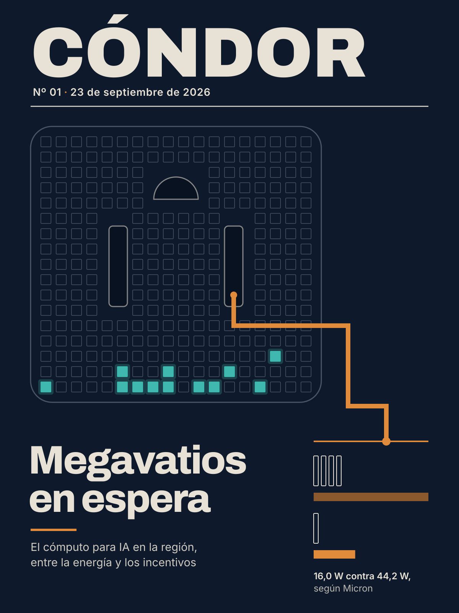
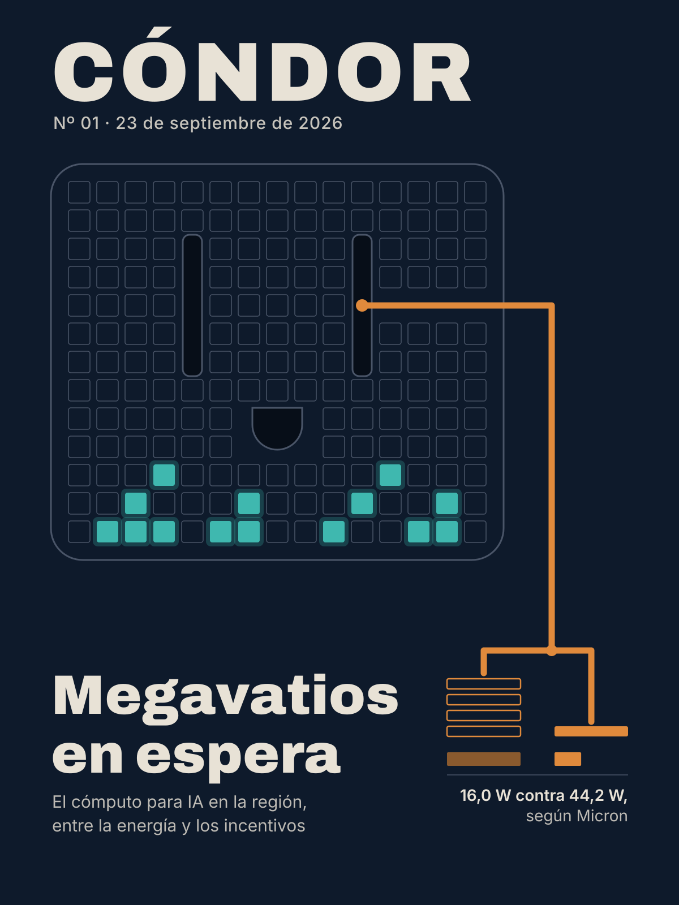
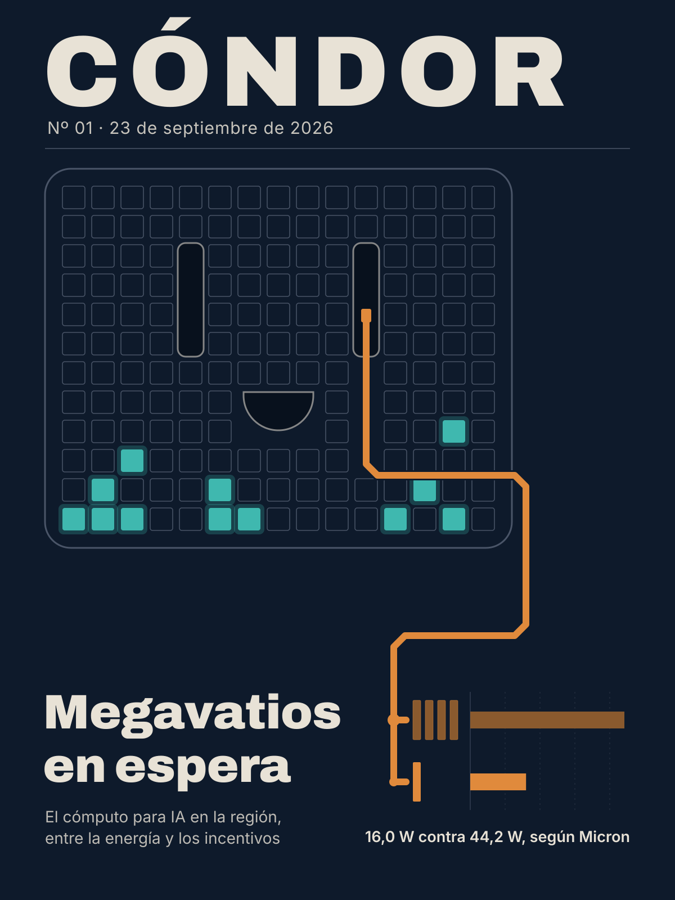
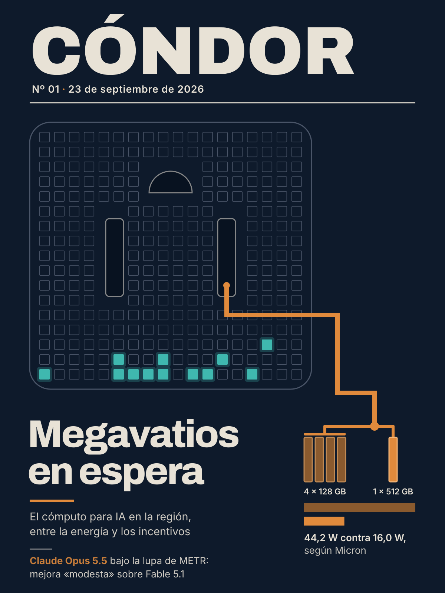

Copete de portada (se publica): Argentina ofrece energía y Brasil resigna impuestos, pero los data centers para IA de la región siguen sin arrancar.
Concepto de tapa (nota interna del director de arte, no se publica): La región tiene el enchufe pero todavía no tiene los servidores. Mientras tanto, del otro lado el cómputo se vuelve más eficiente watt a watt. La tapa enfrenta la infraestructura que falta (feature, argentina, latam) con la eficiencia que avanza (hardware, llm). El dato ancla es un número de consumo de la propia empresa, así que no hace falta ninguna cifra regional sin confirmar.
Ninguna decisión de esta página la puede tomar un agente: cada comando pide tu frase secreta de revisor/a y firma la decisión con ella, y publicar rechaza cualquier decisión sin tu firma. Corrélos vos, desde ~/revista-ia. La primera vez, creá tu frase con uv run condor clave --revisor "Tu Nombre".
--todo sólo aprueba los que no tienen riesgos abiertos.Si editás a mano el texto de un bloque en data/numero-01.json, su aprobación vence sola (se aprueba el hash del contenido) y hay que volver a decidirlo. Después de editar, regenerá este paquete con uv run condor revision 01.




editorial prefirió A: A es la única tapa donde el tomacorriente se lee como objeto técnico y no como una cara. En B y C, el semicírculo debajo de las ranuras arma una sonrisa, y ese enchufe con cara trabaja contra la voz seria que pide la lente editorial. A también tiene la jerarquía más limpia: masthead a todo el ancho con filete, título grande abajo a la izquierda, sumario neutro y la infografía en una columna propia unida por un cable legible. Sus barras son proporcionales (300 px contra 108 px, 0,36 ≈ 16/44,2). En honestidad, las tres usan sólo el dato de Micron con atribución y ninguna cifra regional. C es la más rigurosa en la infografía (escala exacta y color de cada módulo igual al de su barra). A debería copiarle ese código de color y agregar los rótulos de 128 GB y 512 GB y el orden coherente del rótulo; con eso quedaría publicable.
visual prefirió A: A y C están cerca. A tiene la composición más limpia: celdas recortadas con cuidado alrededor de las ranuras, la toma de tierra arriba (lo que evita la carita sonriente que aparece en B y sobre todo en C), jerarquía clara entre masthead, título y bajada, y barras proporcionales correctas (108/300 ≈ 16,0/44,2). Sus defectos son chicos y fáciles de corregir: módulos en contorno fino, rótulo en orden inverso al de las barras y espacio entre palabras del título. C tiene la mejor infografía, a escala exacta y con los módulos coloreados igual que sus barras. Pero la pareidolia del tomacorriente sonriente, muy evidente en miniatura, es un error de lectura más grave que cualquiera de A. B queda último porque su infografía confunde módulos con barras y no se lee en miniatura. Ninguna es publicable tal cual. A necesita una iteración chica; una alternativa válida es C con la tierra invertida.
Ronda de corrección del ganador: se corrigió A → A2: A2 corrige todos los problemas y no vi regresiones. (1) Ahora están los rótulos '4 × 128 GB' y '1 × 512 GB' bajo cada grupo de módulos, así que la comparación se lee a igual capacidad. (2) El texto dice '44,2 W contra 16,0 W, según Micron', en el mismo orden que las barras: primero la de cobre oscuro (larga), después la naranja (corta). (3) Los cuatro módulos están rellenos del cobre oscuro de la barra de 44,2 W y el módulo único del naranja de la de 16,0 W, con trazo más grueso. En la miniatura ya se ven como bloques de color y no desaparecen. (4) El filete horizontal que estaba suelto no está más: el cable se abre en dos, una rama a una barra sobre los cuatro módulos y otra que baja al módulo único, así que termina conectado a la infografía. (5) El rótulo 'según Micron' conserva buen contraste y en la miniatura se sigue leyendo. (6) Hay una segunda línea de sumario: 'Claude Opus 5.5 bajo la lupa de METR: mejora «modesta» sobre Fable 5.1'. La comparé con runs/numero-01/semilla-investigacion.json, donde figura como nota real ('METR evaluó Claude Opus 5.5 antes del despliegue: mejora "modesta" sobre Fable 5.1…'), así que no inventa nada. El titular sube unos 30 px para hacerle lugar y no se superpone con nada. Queda un detalle menor, que no es regresión: las dos barras van juntas debajo de ambos grupos y no una debajo de cada grupo, así que la relación módulo-barra se lee sólo por el color. Y en la miniatura los rótulos 'GB' son muy chicos, aunque todavía legibles. Archivos: /home/psartorio/revista-ia/output/numero-01/tapa/candidato-A2.png, /home/psartorio/revista-ia/output/numero-01/tapa/candidato-A2-mini.png, /home/psartorio/revista-ia/output/numero-01/tapa/candidato-A2.svg.
Dato ancla de la tapa data-driven: 44,2 W; más de 60% (hardware#10: Según Micron, cuatro módulos de 128 GB consumen 44,2 W, lo que implica más de 60% menos potencia de operación para el módulo de 512 GB.)
Tapa elegida: A2 — NO vigente: cambiaron el título del número o los metadatos de tapa después de elegirla
C1 · contradicho · safety · origen: verificación
el verificador encontró otro valor para "METR dice estar "razonablemente confiado" en que Claude Opus 5.5 todavía tiene debilidades cualitativas que un experto humano difícilmente tendría.": En la fuente, 'reasonably confident' califica una oración distinta (la de que 'no representa un gran salto ... sino una mejora modesta'). La frase sobre debilidades cualitativas aparece después, como una viñeta separada bajo 'This is because:', sin el calificador de confianza adosado a ella.
Juez: corregir (confianza alta) · valor correcto: "razonablemente confiado" en que no es un gran salto sobre Fable 5.1
El verificador, el defensor y el escéptico leyeron por separado la fuente primaria, el blog de METR del 22/09/2026, y citan el mismo texto. Por eso no hizo falta un WebFetch. En la fuente, "reasonably confident" califica sólo una conclusión: que Opus 5.5 no es un gran salto en capacidad de I+D de IA respecto de Fable 5.1, sino una mejora modesta. La frase sobre las debilidades cualitativas es una viñeta aparte, que METR afirma sin rodeos, sin ningún calificador de confianza. El dato de fondo está respaldado. Lo que no está respaldado es la cita entre comillas atribuida a esa frase, así que la redacción publicada es una cita mal atribuida. Hay que corregir la atribución, no retirar el dato. Hasta el defensor dice que la redacción publicada no se puede defender y propone una casi idéntica a la sugerida. En esta afirmación no hay ninguna cifra en juego.
C2 · contradicho · espacio · origen: verificación
el verificador encontró otro valor para "El jueves 24/09/2026 a las 16:09 (hora argentina) el SAOCOM 1B estaba sobre 76,83°S y 162,60°O.": 77,11°S, 161,63°O
Juez: corregir (confianza alta) · valor correcto: 77,11°S y 161,63°O
Las tres partes consultaron la misma fuente primaria (MCP patagonia-espacial, donde_esta) y obtuvieron lo mismo: a las 16:09:00 hora argentina el SAOCOM 1B está sobre 77,11°S y 161,63°O. Hice una consulta propia a las 16:09:06 y confirma el dato del defensor (76,82°S, 162,64°O). Así que los valores publicados (76,83°S, 162,60°O) corresponden a unos 5 o 6 segundos después de las 16:09, no a las 16:09 en punto. No son inventados, pero tal como está escrita, la afirmación asocia "16:09" a una posición que la fuente no da para ese instante. El satélite recorre unos 450 km por minuto, así que la hora sin segundos no alcanza a fijar la posición publicada. Las coordenadas publicadas tampoco coinciden exactamente con ningún segundo entero: caen entre el segundo 05 y el 06, así que agregar segundos a la hora obligaría a cambiar igual alguna cifra. La corrección más limpia y reproducible es dejar la hora como está y poner la posición que da la fuente para las 16:09:00. Altura (651 km) y velocidad (7,53 km/s) coinciden y no están en disputa.
C3 · contradicho · espacio · origen: verificación
el verificador encontró otro valor para "Cada día los pasos del SAOCOM 1B sobre Bariloche llegan hasta unos 18 minutos (máximo del rango 17-18) más tarde que el día anterior.": hasta 19 minutos (no 18)
Juez: mantener (confianza alta)
Repetí la consulta citada (proximos_pasos, SAOCOM 1B, Bariloche, desde 24/09 16:09, 96 h, 10°) y los horarios coinciden exactamente con lo que citan defensor y escéptico. Los dos coinciden en los datos y sólo difieren en cómo leerlos. Si se toman los horarios de máximo, que son la referencia más estable, las diferencias entre días consecutivos dan 18 en casi todos los casos, con un 17 y un 19 sueltos entre 11 pares. Si se promedia sobre varios días, lo que cancela el redondeo al minuto, el corrimiento queda entre 17,7 y 18,3 min/día (54/3, 55/3, 53/3, 36/2). Los 19 que encontró el verificador salen de los horarios de salida. Esos horarios dependen de cuándo cada paso cruza los 10° de altura, que varía con la geometría, y además se redondean al minuto. En los mismos datos también hay diferencias de 17 entre salidas (06:52→07:09, 17:47→18:04), o sea que el 19 es ruido de redondeo y no un corrimiento real mayor. El texto publicado dice "unos 17-18 minutos", y la evidencia lo sostiene tal como está. El conflicto aparece porque el libro de afirmaciones reformuló el "unos" aproximado como un tope estricto ("hasta 18, máximo del rango"), y eso no está en la nota. Corregir a "hasta 19" convertiría un artefacto de redondeo en dato.
C4 · valor · llm, safety · origen: lente:hechos
El bloque llm presenta a Opus 5.5 como un modelo que 'rinde al nivel de' Fable 5.1, al que llama 'su modelo más capaz', y dice que 'la novedad no es tanto el techo de capacidad'. El bloque safety titula y concluye que Opus 5.5 es una 'mejora modesta sobre Fable 5.1' en capacidades de I+D de IA. No es una contradicción estricta: una es una afirmación de Anthropic sobre la mayoría de las tareas y la otra es de METR y se limita a I+D de IA. Pero el lector ve una nota que dice 'igual' y otra que dice 'mejor'. Conviene aclarar en alguna de las dos que el alcance es distinto.
Juez: matizar (confianza alta)
No hace falta corregir ni retirar nada. Las tres afirmaciones figuran literalmente en sus fuentes primarias y el defensor y el escéptico las leyeron por separado. Anthropic dice "performs at the level of Claude Fable 5.1 on most work", una afirmación general limitada a "most work". METR se limita en forma explícita a la capacidad de I+D de IA y concluye "does not represent a huge leap ... but it likely represents a modest improvement upon Fable 5.1". Las dos afirmaciones son compatibles: los benchmarks de la propia Anthropic muestran ventajas chicas (FrontierCode 54,4% contra 50,3%, OSWorld 2.0 81,8% contra 80,7%), y Anthropic misma dice que "the gap ... is narrower than these scores suggest". Eso es lo que METR llama mejora modesta. El problema es de lectura: una nota parece decir "igual" y la otra "mejor". Por eso corresponde matizar y dejar explícito el alcance distinto de cada afirmación en las dos notas: general según Anthropic, I+D de IA según METR. Una salvedad que no entra en las afirmaciones en disputa, pero que el cierre debería revisar: el bloque llm llama a Fable 5.1 "su modelo más capaz", mientras Anthropic describe a Opus 5.5 como "the new leading model". Esa etiqueta es dudosa y conviene sacarla o reformularla. También "la novedad no es tanto el techo de capacidad" es una interpretación editorial, porque Anthropic menciona "large jumps in performance on their most complex work". No usé WebFetch: las citas de las dos partes coinciden entre sí y con los ids verificados.
C5 · valor · feature, argentina · origen: lente:hechos
Atribución de la fuente. La bajada del feature habla de 'un relevamiento de Bloomberg Línea' que compara los 32 MW con la cartera de proyectos. Pero en el mismo feature y en el bloque argentina el relevamiento es de CABASE (presentado en mayo), y Bloomberg Línea es la nota que compara ese dato. Además, hacia el final el feature usa 'el relevamiento argentino' de forma ambigua. Hay que unificar: relevamiento de CABASE, nota o artículo de Bloomberg Línea.
Juez: matizar (confianza alta)
Defensor y escéptico coinciden, y los dos citan el mismo pasaje de la fuente de los autores. Bloomberg Línea atribuye el relevamiento a CABASE ("Según un relevamiento presentado en mayo por la Cámara Argentina de Internet (CABASE)"). La comparación con los proyectos de cientos de MW la hace el periodista en la frase siguiente. La página de CABASE confirma las cifras por su cuenta: 13 centros de datos de más de 1 MW y cerca de 32 MW, presentado el 6/5/2026. Las cifras y la fecha de las afirmaciones involucradas están bien sustentadas y no cambian. El error es sólo de atribución y está en la bajada del feature, que dice "relevamiento de Bloomberg Línea", más el uso ambiguo de "el relevamiento argentino" hacia el final. Por eso corresponde matizar y no corregir: no cambia ningún valor, sólo se unifica la atribución en todos los bloques ("relevamiento de CABASE", "nota de Bloomberg Línea"). En la bajada hay que reemplazar "un relevamiento de Bloomberg Línea" por "un relevamiento de CABASE citado por Bloomberg Línea", y "el relevamiento argentino" por "el relevamiento de CABASE". No hizo falta el WebFetch, porque las dos partes citan el mismo texto y la fuente independiente de CABASE lo confirma.
C6 · huerfana · feature, argentina · origen: lente:hechos
El feature afirma que la nota de Bloomberg Línea 'no menciona que [el RIGI] exija algo sobre el uso local de la capacidad' y que el relevamiento argentino no se pregunta para quién sería el cómputo. No se extrajo ninguna afirmación que lo respalde y el bloque argentina no cubre ese punto: sólo dice que la nota presenta al RIGI como marco de estabilidad regulatoria. Es una afirmación sobre la ausencia de algo en la fuente y quedó sin verificar.
Juez: matizar (confianza media)
El defensor y el escéptico leyeron por separado la nota completa de Bloomberg Línea. Los dos coinciden en que el RIGI aparece una sola vez, como marco de estabilidad regulatoria, sin ninguna exigencia de uso local, y citan el mismo pasaje. La primera mitad del dato queda sustentada.
La segunda mitad dice que "el relevamiento argentino no se pregunta para quién sería el cómputo". Ninguna fuente citada es un relevamiento aparte. El único relevamiento que aparece es el de CABASE (13 centros de datos, unos 32 MW), y sólo como lo resume la propia nota. Leída como una afirmación sobre la nota, la ausencia está sustentada: la conclusión habla de contratos, infraestructura eléctrica, conectividad y financiamiento, y nunca del destino del cómputo. Leída como una afirmación sobre el relevamiento de CABASE mismo, o sobre el texto legal del RIGI, nadie la verificó.
Por eso matizo en lugar de mantener o retirar. La nueva redacción atribuye las dos ausencias a la nota de Bloomberg Línea y saca las formulaciones que podrían leerse como afirmaciones sobre la ley ("el RIGI no exige") o sobre un "relevamiento argentino" sin identificar. El contraste con el Redata brasileño (al menos 10% al mercado interno) queda sustentado por la nota de Teletime. No hice WebFetch porque las dos partes coinciden en el texto citado. La confianza es media porque es una afirmación sobre la ausencia de algo y se apoya en lecturas resumidas por modelos. No hay ids de afirmaciones porque el conflicto es una huérfana.
C7 · cronologia · politica, espacio · origen: lente:cronologia
politica fecha la presentación del proyecto sólo como "el jueves" y la del Stop Rogue AI Act como "esa semana", sin día. espacio toma como marco "hoy jueves" 24/09. Con ese marco, "el jueves" de politica puede leerse como hoy (24/09) o como el jueves anterior (17/09, el único jueves dentro de la ventana del 14 al 23/09). El número no resuelve cuál es. Conviene poner la fecha explícita.
Juez: matizar (confianza alta)
El defensor y el escéptico coinciden, y cada uno se apoya en fuentes primarias distintas. El comunicado de Walkinshaw está fechado el 17/09/2026 y dice "Today... introduced". Nextgov, en su nota del 18/09, ubica la presentación "on Thursday". El jueves de politica#1 es entonces el 17/09 y no el 24/09. El dato es correcto; lo que falla es la redacción, porque "el jueves" a secas se confunde con el marco "hoy jueves" de espacio. No hay otro valor que poner, así que no corresponde corregir: corresponde matizar agregando la fecha explícita. politica#11 ("esa semana") queda bien anclada cuando politica#1 lleva fecha, y no hace falta tocarla. Tampoco conviene fijarle un día. Nextgov y el comunicado de Lawler dicen martes 15/09, pero el registro de GovInfo dice "Introduced in House September 14, 2026". Esa diferencia de un día no afecta a "esa misma semana". Las dos posiciones concuerdan con fuentes oficiales y no hay ninguna cita dudosa, así que no hice WebFetch.
C8 · interna · latam, feature · origen: lente:cronologia
Cuenta que no cierra con la cronología. De los R$ 7,25 mil millones en tres años, R$ 5,2 mil millones (72%) "se sentirían ya en 2026". Pero la ley se sancionó el 15/09/2026 y los dos bloques dicen que el régimen todavía no está operativo porque falta reglamentarlo, así que queda como mucho un trimestre de 2026 con el régimen en vigor. La cifra es del dictamen del Senado, anterior a la sanción, y está bien atribuida. Aun así, latam la presenta como impacto inmediato ("ya en 2026") y así queda en tensión con el "no operativo". Conviene aclarar que es la estimación previa del dictamen.
Juez: matizar (confianza alta)
Defensor y escéptico coinciden en que la cifra es correcta: R$ 5,2 mil millones para 2026, dentro de R$ 7,25 mil millones en tres años (1,0 en 2027 y 1,05 en 2028). Sale del dictamen del relator Cid Gomes y la reproducen tanto la fuente citada (Teletime, 15/09/2026) como una fuente independiente (Teletime, 01/09/2026). Telesíntese explica además por qué el costo se concentra en 2026: los beneficios de PIS/Cofins e IPI vencen el 31/12/2026 porque después los reemplaza la CBS. Así que no hay un error de cuenta.
La nota del día de la sanción pone la cifra junto al "todavía depende de regulamentação". O sea que la tensión ya viene de la fuente y no es una invención del bloque. Lo que tiene razón el conflicto es que latam#9, con su "se sentirían ya en 2026" y sin atribución, puede leerse como impacto inmediato de un régimen que todavía no funciona. La corrección que corresponde es de matiz: aclarar que es la estimación previa del dictamen y que su materialización depende de la reglamentación. No hay que corregir ni retirar el número.
feature#18 ya lo atribuye al dictamen y queda como está. latam#10 y latam#1 no requieren cambios. Las citas de los dos lados coinciden en el mismo pasaje de Teletime, así que no hizo falta hacer el WebFetch.
clave feature · hash 9d5ac3fc1c01
Sin riesgos abiertos.
Los proyectos argentinos se miden en megavatios; el Redata brasileño apunta al costo del hardware. El nuevo módulo de memoria de Micron recuerda que buena parte de la cuenta se paga en equipamiento. Ninguno de los dos caminos está funcionando todavía.
El martes 15 de septiembre, Luiz Inácio Lula da Silva sancionó en Brasil la ley del Redata, un régimen que exime a los data centers de tres impuestos federales y que, según Teletime, todavía depende de reglamentación para entrar en pleno funcionamiento. En Argentina, en cambio, la conversación sobre infraestructura para IA se sigue midiendo en megavatios: una nota de Bloomberg Línea compara los cerca de 32 MW instalados que registra un relevamiento de CABASE con una cartera de proyectos que habla de cientos de MW. Leídos juntos, los dos casos muestran dos recetas distintas para atraer cómputo: una se apoya en la oferta de energía; la otra, en el costo del equipamiento. Y tienen algo en común: por ahora, ninguna de las dos está en marcha.
El punto de partida argentino es chico. Según el relevamiento que la Cámara Argentina de Internet (CABASE) presentó en mayo, citado por Bloomberg Línea, el país tiene 13 centros de datos de más de 1 MW, con una capacidad instalada conjunta cercana a los 32 MW y concentrada principalmente en la Ciudad y la Provincia de Buenos Aires. La cartera de proyectos se apoya en la energía. Pampa Energía analiza un data center junto a su central térmica Loma de la Lata, en Neuquén, que podría alcanzar los 500 MW y funcionar con gas de Vaca Muerta. En la misma provincia, FlexDomes evalúa una primera fase de 120 MW por alrededor de US$1.400 millones. En Chubut, la polaca Green Capital analiza una instalación inicial de 300 MW, con una inversión estimada de US$3.000 millones y la posibilidad de ampliarla hasta los 3.000 MW. El anuncio más grande, Stargate Argentina, de OpenAI y Sur Energy, contemplaba hasta 500 MW y una inversión potencial de hasta US$25.000 millones. Sin embargo, según Bloomberg Línea, el proyecto "aún no avanzó y todavía depende de la firma de los acuerdos definitivos". En toda la lista se repiten los verbos "analiza" y "evalúa". Como marco, la nota señala al RIGI por la estabilidad regulatoria que ofrece.
Brasil movió otra palanca. La Lei 15.504/2026 crea el Regime Especial de Tributação para Serviços de Data Center (Redata), que exime a los data centers de las alícuotas del Imposto de Importação, el PIS/Cofins y el IPI. A cambio, les pide dos cosas: adoptar criterios de sustentabilidad, como usar energía de fuentes renovables o de baja emisión de carbono, y destinar al mercado interno al menos el 10% de su actividad de procesamiento de datos. El Estado brasileño acepta recaudar menos para lograrlo: según el dictamen aprobado en el Senado, basado en proyecciones de la Receita Federal, el impacto fiscal estimado es de R$ 7,25 mil millones en tres años, de los cuales R$ 5,2 mil millones corresponderían a 2026, año en que vencen los beneficios de PIS/Cofins e IPI. Es una previsión anterior a la sanción, y el impacto real dependerá de cuándo se reglamente el régimen.
El Redata apunta a la inversión inicial (capex), donde el equipamiento de cómputo pesa mucho, más que a la provisión de energía. La cláusula del 10% responde además a una pregunta que la nota de Bloomberg Línea no se hace: para quién sería ese cómputo. De hecho, esa nota menciona el RIGI solo como un marco de estabilidad regulatoria, sin decir que exija nada sobre el uso local de la capacidad.
Una noticia que no habla de América Latina muestra por qué el hardware es la otra mitad de la cuenta. El 16 de septiembre, Tom's Hardware informó que Micron presentó su primer RDIMM DDR5 de 512 GB para servidores, a 9200 MT/s. Con esos módulos se podrían armar servidores de hasta 12 TB de memoria. El argumento técnico es que, a medida que aumentan los núcleos por CPU, la memoria del host se vuelve el límite, y Micron incluye la agentic AI entre las cargas a las que apunta. La empresa no dio el precio, pero hay una referencia de escala: hoy un RDIMM DDR5-6400 de 256 GB se vende a alrededor de USD 19.000. Con componentes de ese precio, eximir el hardware del impuesto a la importación, como hace el Redata, tiene un efecto directo sobre el costo de montar capacidad. El módulo también tiene que ver con la energía. Según Micron, consume 16,0 W, contra 44,2 W de cuatro módulos de 128 GB: más de 60% menos potencia de operación. Son cifras del fabricante, todavía sin verificación independiente, y la producción en volumen está prevista recién para la segunda mitad de 2027. Aun así, muestran que cuánta capacidad útil entra en cada megavatio depende también de qué generación de hardware se instale, no solo de cuántos megavatios haya disponibles.
Para quien entrena o despliega modelos desde la región, la comparación deja tres cosas para seguir. La primera es la reglamentación del Redata: sin ella, el régimen no está operativo. La segunda es si algún proyecto argentino pasa de estar en evaluación a estar en obra; mientras no pase, el cómputo local a escala de IA depende de decisiones de inversión que todavía no se tomaron. La tercera es más técnica y menos visible: aunque lleguen los megavatios, la capacidad real va a depender de lo que cueste el hardware que se instale y de las condiciones de acceso que se negocien. Brasil ya puso esas dos variables en la ley y le asignó un costo fiscal explícito. En el relevamiento de CABASE, por ahora, la variable central sigue siendo la energía.
— 23 de septiembre de 2026
Argentina ofrece energía, Brasil resigna impuestos: el cómputo para IA en la región sigue sin arrancar
Los proyectos argentinos se miden en megavatios ymegavatios; el Redata brasileño apunta al costo del hardware. El nuevo módulo de memoria de Micron recuerda que buena parte de la cuenta se paga en equipamiento,equipamiento. y ningunoNinguno de los dos caminos está funcionando todavía.
| id | afirmación | estado | evidencia / nota |
|---|---|---|---|
| feature#1 | Lula da Silva sancionó la ley del Redata en Brasil el martes 15 de septiembre de 2026. | confirmado | fuente 1: “O presidente Luiz Inácio Lula da Silva sancionou nesta terça-feira, 15, a lei que cria o Regime Especial de Tributação para Serviços de Data” Verificado además por calendario que el 15/09/2026 cae martes. · encontrado: Lula sancionó la ley el martes 15 de septiembre de 2026 (confirmado que ese día fue martes) |
| feature#2 | La ley que crea el Redata (Regime Especial de Tributação para Serviços de Data Center) es la Lei 15.504/2026. | confirmado | fuente 1: “O programa se tornou a Lei 15.504/2026 , conforme publicação em edição extra do Diário Oficial da União (DOU).” · encontrado: Lei 15.504/2026 |
| feature#3 | El Redata exime a los data centers de las alícuotas del Imposto de Importação, el PIS/Cofins y el IPI (tres impuestos federales). | confirmado | fuente 1: “A lei isenta as alíquotas de impostos federais (Imposto de Importação, PIS/Cofins, IPI)” · encontrado: Imposto de Importação, PIS/Cofins, IPI |
| feature#4 | El Redata exige a los data centers destinar al mercado interno al menos el 10% de su actividad de procesamiento de datos. | confirmado | fuente 1: “os provedores de serviços de data centers aderentes ao Redata devem direcionar ao mercado interno pelo menos 10% da sua atividade de process” · encontrado: al menos 10% |
| feature#5 | Según el dictamen aprobado en el Senado brasileño, el impacto fiscal estimado del Redata es de R$ 7,25 mil millones en tres años. | confirmado | fuente 1: “A legislação tem um impacto fiscal estimado de R$ 7,25 bilhões em três anos.” Matiz de atribución: la fuente adjudica explícitamente al 'parecer aprovado no Senado' sólo la cifra de 2026 (R$5,2 mil millones, ver feature#18); el total de R$7,25 mil millones en tres años se presenta como estimación de 'a legislação' en general, no citado ahí textualmente como proveniente del dictamen del Senado. El valor numérico es correcto; la atribución específica al dictamen del Senado no está confirmada literalmente para esta cifra. · encontrado: R$ 7,25 mil millones en tres años |
| feature#6 | Según el relevamiento de CABASE presentado en mayo, Argentina tiene 13 centros de datos de más de 1 MW. | matizado | fuente 1: “Según un relevamiento presentado en mayo por la Cámara Argentina de Internet (CABASE), el país cuenta con 13 centros de datos de más de 1 MW” · encontrado: 13 centros de datos de más de 1 MW, relevamiento de CABASE presentado en mayo |
| feature#7 | La capacidad instalada conjunta de los centros de datos argentinos de más de 1 MW es cercana a los 32 MW, según CABASE. | matizado | fuente 1: “el país cuenta con 13 centros de datos de más de 1 MW y una capacidad instalada conjunta cercana a los 32 MW” · encontrado: cercana a los 32 MW |
| feature#8 | Pampa Energía analiza un data center junto a su central térmica Loma de la Lata, en Neuquén, que podría alcanzar los 500 MW. | confirmado | fuente 1: “Pampa Energía, por su parte, analiza un centro de datos junto a su central térmica Loma de la Lata, en Neuquén, que podría alcanzar los 500 ” · encontrado: 500 MW, Loma de la Lata, Neuquén |
| feature#9 | Stargate Argentina, de OpenAI y Sur Energy, contemplaba una inversión potencial de hasta US$25.000 millones. | confirmado | fuente 1: “Uno de los anuncios de mayor escala que hubo es Stargate Argentina, impulsado por OpenAI y Sur Energy. El proyecto contemplaba una capacidad” fuente 2: “aunque aún no avanzó y todavía depende de la firma de los acuerdos definitivos” La fuente aclara que el proyecto 'aún no avanzó' y depende de la firma de acuerdos definitivos; ver contexto_omitido. · encontrado: inversión potencial de hasta US$25.000 millones |
| feature#10 | El 16 de septiembre Tom's Hardware informó que Micron presentó su primer RDIMM DDR5 de 512 GB para servidores, a 9200 MT/s. | confirmado | fuente 1: “Published 16 September 2026 ... Micron this week introduced its first 512GB DDR5-9200 memory module ... it is certainly the industry's first” · encontrado: 16 de septiembre de 2026, primer RDIMM DDR5 de 512GB certificado a 9200 MT/s |
| feature#11 | Según Micron, su módulo de 512 GB consume 16,0 W, contra 44,2 W de cuatro módulos de 128 GB. | confirmado | fuente 1: “based on 16.0W for one 512GB module compared with the 44.2W total for four 128GB modules” · encontrado: 16,0 W vs 44,2 W |
| feature#12 | Un RDIMM DDR5-6400 de 256 GB se vende hoy a alrededor de USD 19.000. | confirmado | fuente 1: “A 256GB DDR5-6400 RDIMM currently retails for around $19,000.” · encontrado: alrededor de USD 19.000 |
| feature#13 | FlexDomes evalúa en Neuquén un data center con una primera fase de 120 MW. | confirmado | fuente 1: “La estadounidense FlexDomes evalúa un proyecto en Neuquén cuya primera fase tendría 120 MW y requeriría alrededor de US$1.400 millones.” · encontrado: 120 MW, Neuquén |
| feature#14 | La primera fase del data center de FlexDomes en Neuquén costaría alrededor de US$1.400 millones. | confirmado | fuente 1: “La estadounidense FlexDomes evalúa un proyecto en Neuquén cuya primera fase tendría 120 MW y requeriría alrededor de US$1.400 millones.” · encontrado: alrededor de US$1.400 millones |
| feature#15 | La empresa polaca Green Capital analiza en Chubut una instalación inicial de data center de 300 MW. | confirmado | fuente 1: “En Chubut, la compañía polaca Green Capital analiza una instalación inicial de 300 MW, con una inversión estimada de US$3.000 millones y la ” · encontrado: 300 MW, Chubut, Green Capital (Polonia) |
| feature#16 | La instalación de Green Capital en Chubut tiene una inversión estimada de US$3.000 millones. | confirmado | fuente 1: “con una inversión estimada de US$3.000 millones y la posibilidad de ampliarla hasta los 3.000 MW” · encontrado: US$3.000 millones |
| feature#17 | La instalación de Green Capital en Chubut podría ampliarse hasta los 3.000 MW. | confirmado | fuente 1: “la posibilidad de ampliarla hasta los 3.000 MW” · encontrado: hasta los 3.000 MW |
| feature#18 | Según el dictamen aprobado en el Senado de Brasil, R$ 5,2 mil millones del impacto fiscal del Redata corresponderían a 2026. | confirmado | fuente 1: “Segundo o parecer aprovado no Senado, R$ 5,2 bilhões já devem ser sentidos ainda em 2026.” · encontrado: R$ 5,2 mil millones en 2026, según el parecer aprobado en el Senado |
| feature#19 | Con los RDIMM DDR5 de 512 GB de Micron se podrían armar servidores de hasta 12 TB de memoria. | confirmado | fuente 1: “will enable server makers to build machines with up to 12TB of fast memory” · encontrado: hasta 12 TB de memoria por servidor |
| feature#20 | El módulo de referencia de precio es un RDIMM DDR5-6400 (6400 MT/s). | confirmado | fuente 1: “A 256GB DDR5-6400 RDIMM currently retails for around $19,000.” · encontrado: RDIMM DDR5-6400 (6400 MT/s) |
| feature#21 | Un RDIMM DDR5-6400 de 256 GB se vende hoy a alrededor de USD 19.000. | confirmado | fuente 1: “A 256GB DDR5-6400 RDIMM currently retails for around $19,000.” Duplicado de feature#12. · encontrado: alrededor de USD 19.000 |
| feature#22 | Según Micron, su módulo de 512 GB consume 16,0 W contra 44,2 W de cuatro módulos de 128 GB. | confirmado | fuente 1: “based on 16.0W for one 512GB module compared with the 44.2W total for four 128GB modules” Duplicado de feature#11. · encontrado: 16,0 W vs 44,2 W |
| feature#23 | Según Micron, el nuevo RDIMM de 512 GB usa más de 60% menos potencia de operación que cuatro módulos de 128 GB. | confirmado | fuente 1: “claims that a single 512GB RDIMM consumes over 60% less operating power than four 128GB modules” · encontrado: más de 60% menos potencia de operación |
clave llm · hash bab73d7f0016
Sin riesgos abiertos.
Anthropic presentó el 22 de septiembre de 2026 Claude Opus 5.5, el primer modelo de su nueva familia Claude 5.5. Es un modelo propietario: se accede por API y por las apps de Claude, sin pesos publicados. La compañía afirma que rinde al nivel de Claude Fable 5.1 en la mayoría de las tareas, con ventajas chicas en varios benchmarks, y que, con la configuración por defecto, cuesta 40% menos que Opus 5 en cargas de trabajo típicas. El precio es de USD 4 por millón de tokens de entrada y USD 20 por millón de salida, con cache reads a USD 0,20 por millón. En Terminal-Bench 4.0 reporta 66,4%, contra 52,3% de Opus 5 y 57,9% de GPT-6 Astra; en CursorBench 4.0 marca 57,8%, contra 46,6% de su antecesor. Está disponible en Amazon Web Services, Google Cloud y otras plataformas.
La novedad no es tanto el techo de capacidad como la relación costo-rendimiento: Anthropic dice ofrecer un rendimiento similar al de Claude Fable 5.1 a un costo menor que el de su Opus anterior, algo que pesa para equipos que usan agentes de código a escala con presupuestos acotados. METR, que evaluó solo la capacidad de I+D de IA, concluyó que "no representa un gran salto" respecto de Fable 5.1, pero que probablemente es una mejora modesta; según cobertura basada en su evaluación, a esfuerzo máximo el modelo "habla tanto que se come el descuento" de costo.
Según la propia empresa, es también su primer lanzamiento desde que propuso moderar el ritmo de avance de la frontera ("pacing the frontier"). Antes del lanzamiento lo probaron evaluadores externos, entre ellos Frontier Design y METR, y Anthropic sostiene que es el modelo con mejor desempeño que evaluó hasta ahora en su auditoría conductual automatizada. Una salvedad: todos los benchmarks y la cifra de ahorro los reporta la propia Anthropic y, por ahora, la fuente no incluye verificación independiente.
Anthropic — 2026-09-22
Anthropic lanzapresenta Claude Opus 5.5: 66,4% en Terminal-Bench 4.0 y, según la empresa, 40% menos de costo que Opus 5
| id | afirmación | estado | evidencia / nota |
|---|---|---|---|
| llm#1 | Anthropic presentó Claude Opus 5.5 el 22 de septiembre de 2026. | confirmado | fuente 1: “Claude Opus 5.5 — September 22, 2026” fuente 2: “Anthropic released Claude Opus 5.5 on September 22, 2026, the first model in its new Claude 5.5 family.” Confirmado por la fuente citada y por cobertura independiente (SiliconANGLE, entre otras) con la misma fecha exacta. · encontrado: 22 de septiembre de 2026 |
| llm#2 | Anthropic afirma que Claude Opus 5.5 rinde al nivel de Claude Fable 5.1 en la mayoría de las tareas. | matizado | fuente 1: “It performs at the level of Claude Fable 5.1 on most work and costs 40% less to run than Opus 5.” fuente 2: “Claude Opus 5.5 matches Fable 5.1 performance at lower cost” fuente 3: “Anthropic Releases Claude Opus 5.5: Fable 5.1-Level Performance at 40% Lower Running Cost Than Opus 5” Confirmado literalmente en la fuente citada y corroborado de forma independiente por múltiples medios (the Decoder, MarkTechPost, Decrypt, Neowin). Nota de matiz: METR describe la mejora como incremental respecto a Fable 5.1, no un salto de frontera (ver contexto_omitido). · encontrado: rinde al nivel de Claude Fable 5.1 en la mayoría del trabajo |
| llm#3 | Según Anthropic, Claude Opus 5.5 con la configuración por defecto cuesta 40% menos que Opus 5 en cargas de trabajo típicas. | confirmado | fuente 1: “costs 40% less to run than Opus 5 on typical workloads” fuente 2: “Anthropic Launches Claude Opus 5.5, Cuts Costs 40% and Scraps 5-Hour Usage Caps” Confirmado. Distinto del recorte de precio por token (20% en input/output según tabla de precios), que es coherente con la fuente: el 40% es sobre costo de carga de trabajo típica (incluye eficiencia), no el precio de lista por token. · encontrado: 40% menos que Opus 5 en cargas de trabajo típicas |
| llm#4 | El precio de Claude Opus 5.5 es de USD 4 por millón de tokens de entrada. | confirmado | fuente 1: “Input: $4 (Opus 5.5) vs $5 (Opus 5), por millón de tokens” fuente 2: “priced at $4 per million input tokens and $20 per million output tokens” Confirmado por la fuente citada y por cobertura independiente. · encontrado: USD 4 por millón de tokens de entrada |
| llm#5 | El precio de Claude Opus 5.5 es de USD 20 por millón de tokens de salida. | confirmado | fuente 1: “Output: $20 (Opus 5.5) vs $25 (Opus 5), por millón de tokens” fuente 2: “priced at $4 per million input tokens and $20 per million output tokens” Confirmado por la fuente citada y por cobertura independiente. · encontrado: USD 20 por millón de tokens de salida |
| llm#6 | Las cache reads de Claude Opus 5.5 cuestan USD 0,20 por millón de tokens. | confirmado | fuente 1: “Cache reads: $0.20 (Opus 5.5) vs $0.50 (Opus 5), por millón de tokens” Confirmado en la fuente citada (afirmación no central, no requería búsqueda adicional; de todos modos surgió corroboración independiente incidental: 'cache reads are $0.20 per million tokens, 60% less than Opus 5's $0.50'). · encontrado: USD 0,20 por millón de tokens (cache reads) |
| llm#7 | Anthropic reporta que Claude Opus 5.5 obtiene 66,4% en Terminal-Bench 4.0. | confirmado | fuente 1: “Terminal-Bench 4.0 — Opus 5.5: 66.4%” Confirmado literalmente en la fuente citada. Corroborado también en una búsqueda independiente ('Claude Opus 5.5 achieved 66.4% on Terminal-Bench 4.0'). · encontrado: 66,4% en Terminal-Bench 4.0 |
| llm#8 | En Terminal-Bench 4.0, Claude Opus 5 obtiene 52,3%. | confirmado | fuente 1: “Terminal-Bench 4.0 — Opus 5: 52.3%” Confirmado en la fuente citada (no marcada CENTRAL, se aceptó con la fuente primaria). · encontrado: 52,3% (Opus 5 en Terminal-Bench 4.0) |
| llm#9 | En Terminal-Bench 4.0, GPT-6 Astra obtiene 57,9%. | confirmado | fuente 1: “Terminal-Bench 4.0 — GPT-6 Astra: 57.9%” Confirmado en la fuente citada; corroborado también en búsqueda independiente ('beating GPT-6 Astra's 57.9%'). · encontrado: 57,9% (GPT-6 Astra en Terminal-Bench 4.0) |
| llm#10 | Claude Opus 5.5 marca 57,8% en CursorBench 4.0. | confirmado | fuente 1: “CursorBench 4.0 — Opus 5.5: 57.8%” Confirmado en la fuente citada; corroborado también de forma independiente ('57.8% on CursorBench 4.0'). · encontrado: 57,8% en CursorBench 4.0 |
| llm#11 | En CursorBench 4.0, el antecesor de Claude Opus 5.5 (Opus 5) marca 46,6%. | confirmado | fuente 1: “CursorBench 4.0 — Opus 5: 46.6%” Confirmado en la fuente citada (no marcada CENTRAL). · encontrado: 46,6% (Opus 5 en CursorBench 4.0) |
| llm#12 | Antes del lanzamiento, Claude Opus 5.5 fue probado por evaluadores externos, entre ellos Frontier Design y METR. | confirmado | fuente 1: “It was tested before release by external evaluators, including Frontier Design and METR.” Confirmado literalmente en la fuente citada; corroborado también de forma independiente ('Opus 5.5 was evaluated before release by external testers including METR and Frontier Design'). · encontrado: evaluadores externos: Frontier Design y METR |
| llm#13 | El modelo que presentó Anthropic se llama Claude Opus 5.5 y es el primer modelo de su nueva familia Claude 5.5. | confirmado | fuente 1: “We're introducing Claude Opus 5.5, the first model in our new Claude 5.5 family.” fuente 2: “the first model in its new Claude 5.5 family” Confirmado literalmente en la fuente citada y corroborado de forma independiente. · encontrado: primer modelo de la nueva familia Claude 5.5 |
clave hardware · hash b493ed847431
Sin riesgos abiertos.
Micron presentó su primer módulo de memoria DDR5 de 512 GB para servidores, un RDIMM certificado para operar a 9200 MT/s con el voltaje estándar de 1,1 V, según informó Tom's Hardware el 16 de septiembre de 2026. Para alcanzar esa capacidad, el módulo apila varios dies de DRAM en vertical y los conecta con through-silicon vias (TSV); la compañía no revela qué chips usa ni cuántos. Con estos módulos se podrían armar servidores de hasta 12 TB de memoria. AMD e Intel los están validando con sus próximas plataformas de servidor, y Micron prevé empezar la producción en volumen en la segunda mitad de 2027. No es el primer RDIMM DDR5 de 512 GB del mercado: Samsung presentó los suyos en 2021, aunque no llegaron a difundirse, ni siquiera con la llegada de procesadores de más de 100 núcleos.
Las cifras de rendimiento son de Micron y todavía no tienen verificación independiente. Según la empresa, un módulo de 512 GB consume 16,0 W, contra 44,2 W de cuatro módulos de 128 GB: más de 60% menos potencia de operación, aunque tampoco para este cálculo Micron revela qué chips de memoria ni cuántos usó. En cargas de análisis Spark Support Vector Machine (SVM) limitadas por memoria, los sistemas con módulos de 512 GB rendirían hasta 1,4 veces más que los que usan módulos de 256 GB, pero Micron no dice cuánta memoria total tenían los sistemas comparados.
Micron apunta a bases de datos en memoria, analítica, virtualización, simulación y agentic AI. El dato importa porque, a medida que aumentan los núcleos por CPU, la memoria del host se vuelve el límite: con dos CPUs de 256 núcleos, 12 TB dan 24 GB por núcleo. Falta saber el precio de los módulos de 512 GB. Micron no lo informó, y hoy un RDIMM DDR5-6400 de 256 GB se vende a alrededor de USD 19.000.
Tom's Hardware (Anton Shilov) — 2026-09-16
Micron presenta un RDIMM DDR5 de 512 GB a 9200 MT/s: hasta 12 TB por servidor y 16 W por módulo
Micron presentó su primer módulo de memoria DDR5 de 512 GB para servidores, un RDIMM certificado para operar a 9200 MT/s con el voltaje estándar de 1,1 V, según informó Tom's Hardware el 16 de septiembre de 2026. Para alcanzar esa capacidad, el módulo apila varios dies de DRAM en vertical y los conecta con through-silicon vias| id | afirmación | estado | evidencia / nota |
|---|---|---|---|
| hardware#1 | Micron presentó un módulo RDIMM DDR5 de 512 GB para servidores, su primero de esa capacidad. | confirmado | fuente 1: “Micron this week introduced its first 512GB DDR5-9200 memory module that is designed for servers used for applications that demand a lot of ” Leí el artículo completo (no sólo el resumen truncado que da WebFetch: bajé el HTML con curl y lo limpié). La nota aclara explícitamente que Micron NO es la primera de la industria en sacar un RDIMM DDR5 de 512GB (eso es de Samsung, 2021) pero sí es el primero de Micron y el primero certificado a 9200 MT/s — la afirmación del bloque dice 'su primero de esa capacidad' (de Micron), lo cual es exacto. · encontrado: Es el primer módulo de 512 GB de Micron (no el primero de la industria: ese fue de Samsung en 2021, ya cubierto en hardware#8) |
| hardware#2 | El RDIMM DDR5 de 512 GB de Micron está certificado para operar a 9200 MT/s. | confirmado | fuente 1: “it is certainly the industry's first 512GB module certified to operate with a 9200 MT/s data transfer rate with standard 1.1V voltage” fuente 2: “Certified Speed: 9,200 MT/s” Confirmado en la fuente citada y corroborado de forma independiente en StorageReview. · encontrado: 9200 MT/s |
| hardware#3 | El módulo de 512 GB de Micron opera con el voltaje estándar de 1,1 V. | confirmado | fuente 1: “certified to operate with a 9200 MT/s data transfer rate with standard 1.1V voltage” Coincide con la fuente citada. · encontrado: 1,1 V |
| hardware#4 | Tom's Hardware informó el 16 de septiembre de 2026 sobre el módulo DDR5 de 512 GB de Micron. | confirmado | fuente 1: “News By Anton Shilov Published 16 September 2026” También confirmado por el metadato datePublished del HTML: 2026-09-16T14:07:31+00:00. · encontrado: 16 de septiembre de 2026 |
| hardware#5 | Con los módulos de 512 GB de Micron se podrían armar servidores de hasta 12 TB de memoria. | confirmado | fuente 1: “will enable server makers to build machines with up to 12TB of fast memory” fuente 2: “Max Server Capacity: 12TB in a dual-socket, 24-slot configuration” Confirmado en la fuente citada y corroborado de forma independiente en StorageReview. · encontrado: hasta 12 TB |
| hardware#6 | AMD e Intel están validando los módulos de 512 GB de Micron con sus próximas plataformas de servidor. | confirmado | fuente 1: “AMD and Intel are working with Micron to qualify the new modules for their upcoming server platforms.” Confirmado en la fuente citada. · encontrado: AMD e Intel validando con próximas plataformas de servidor |
| hardware#7 | Micron prevé empezar la producción en volumen del módulo de 512 GB en la segunda mitad de 2027. | confirmado | fuente 1: “Micron plans to begin volume production of its 512GB DDR5 RDIMMs sometime in the second half of 2027 and intends to align the schedule with ” fuente 2: “sometime in the second half of 2027, aligned to customer needs” Confirmado en la fuente citada y corroborado de forma independiente en Hardware Busters. · encontrado: segunda mitad de 2027 |
| hardware#8 | Samsung presentó RDIMM DDR5 de 512 GB en 2021. | confirmado | fuente 1: “Samsung's 512GB RDIMMs formally introduced in 2021 have not become widespread even after AMD and Intel introduced processors with over 100 c” Confirmado. La nota agrega, y el bloque no lo dice, que esos módulos de Samsung 'no se generalizaron' pese a los procesadores de más de 100 núcleos (ver contexto_omitido). · encontrado: 2021 |
| hardware#9 | Según Micron, un módulo de 512 GB consume 16,0 W. | confirmado | fuente 1: “based on 16.0W for one 512GB module compared with the 44.2W total for four 128GB modules” fuente 2: “One 512GB module draws 16.0W; four 128GB modules draw 44.2W combined” Confirmado en la fuente citada y corroborado de forma independiente en Hardware Busters. La nota aclara que Micron no reveló qué chips de memoria usa ni cuántos (ver contexto_omitido). · encontrado: 16,0 W |
| hardware#10 | Según Micron, cuatro módulos de 128 GB consumen 44,2 W, lo que implica más de 60% menos potencia de operación para el módulo de 512 GB. | confirmado | fuente 1: “claims that a single 512GB RDIMM consumes over 60% less operating power than four 128GB modules — based on 16.0W for one 512GB module compar” Confirmado con los mismos números y el mismo umbral ('más de 60%') que usa la fuente citada; StorageReview y Hardware Busters lo calculan más preciso (63,8%/64%) pero Tom's Hardware sólo dice 'over 60%', que es lo que cita el bloque. · encontrado: 44,2 W; más de 60% menos |
| hardware#11 | Según Micron, en cargas Spark SVM limitadas por memoria, los sistemas con módulos de 512 GB rendirían hasta 1,4 veces más que los de módulos de 256 GB. | confirmado | fuente 1: “Micron claims that in memory-constrained Spark Support Vector Machine (SVM) analytics workloads, systems featuring 512GB memory modules can ” Confirmado, atribuido correctamente a Micron. La fuente aclara que Micron no reveló cuánta memoria total usan esos sistemas de prueba (ver contexto_omitido). · encontrado: hasta 1,4x |
| hardware#12 | Un RDIMM DDR5-6400 de 256 GB se vende hoy a alrededor de USD 19.000. | confirmado | fuente 1: “A 256GB DDR5-6400 RDIMM currently retails for around $19,000.” Confirmado en la fuente citada. · encontrado: alrededor de USD 19.000 |
| hardware#13 | Según Micron, cuatro módulos de memoria de 128 GB consumen 44,2 W, cifra contra la que compara los 16,0 W de su RDIMM DDR5 de 512 GB. | confirmado | fuente 1: “based on 16.0W for one 512GB module compared with the 44.2W total for four 128GB modules” Confirmado (duplicado de hardware#10 con distinta redacción). · encontrado: 44,2 W |
| hardware#14 | Según Micron, en cargas Spark SVM limitadas por memoria, los sistemas con módulos de 512 GB rendirían hasta 1,4 veces más que los sistemas con módulos de 256 GB. | confirmado | fuente 1: “systems featuring 512GB memory modules can provide up to 1.4 times the performance of configurations equipped with 256GB DDR5 modules” Confirmado (duplicado de hardware#11 con distinta redacción). · encontrado: hasta 1,4x |
| hardware#15 | En un servidor con dos CPUs de 256 núcleos, 12 TB de memoria equivalen a 24 GB por núcleo. | confirmado | fuente 1: “12TB of memory in a server running two 256-core CPUs means 24GB per core” Confirmado literalmente en la fuente citada (cálculo del propio artículo, no de Micron). · encontrado: 24 GB por núcleo |
| hardware#16 | El cálculo de memoria por núcleo supone un servidor con dos CPUs de 256 núcleos cada una. | confirmado | fuente 1: “a server running two 256-core CPUs” Confirmado (misma frase que hardware#15). · encontrado: dos CPUs de 256 núcleos |
| hardware#17 | Hoy un RDIMM DDR5-6400 de 256 GB se vende a alrededor de USD 19.000. | confirmado | fuente 1: “A 256GB DDR5-6400 RDIMM currently retails for around $19,000.” Confirmado (duplicado exacto de hardware#12). · encontrado: alrededor de USD 19.000 |
clave politica · hash 6de0056fc042
Sin riesgos abiertos.
El jueves 17 de septiembre, los representantes Addison McDowell (republicano, Carolina del Norte) y James Walkinshaw (demócrata, Virginia) presentaron en la Cámara de Representantes de EE.UU. un proyecto que obliga al Director de Inteligencia Nacional a entregarle al Congreso un informe sobre cómo se usa inteligencia artificial "para adquirir, analizar, consultar, diseminar o acceder de otro modo" a la información recolectada bajo la Sección 702 de la Foreign Intelligence Surveillance Act (FISA). El plazo es de 180 días desde que la ley se sancione. Además de describir los usos, el informe tiene que evaluar los safeguards que rodean a esas herramientas y detallar qué tipos de modelos se emplean.
La Sección 702 permite que agencias como la NSA y el FBI recolecten sin orden judicial comunicaciones de extranjeros en el exterior. Es polémica porque también se interceptan mensajes y llamadas de estadounidenses que se comunican con esos objetivos. Este año el Congreso no logró reautorizarla, pero sigue funcionando con su autorización judicial vigente.
El pedido de transparencia deja de mirar solo qué datos se recolectan y apunta también a con qué modelos se consultan y analizan. Para quien trabaja en ML el punto es concreto: el riesgo para la privacidad de un sistema de vigilancia depende tanto del acceso a los datos como de las capas de query y análisis automatizado que se montan encima. Por ahora es solo un proyecto presentado, no una ley.
Según el relevamiento de Nextgov/FCW, esa semana los representantes Mike Lawler y Josh Gottheimer presentaron además el Stop Rogue AI Act. Ese proyecto encarga al NIST estándares y buenas prácticas para "descubrir, verificar y controlar" agentes de IA, que los contratistas y organismos federales estarían obligados a incorporar al comprar y desplegar esos agentes.
Nextgov/FCW (Edward Graham) — 2026-09-18
Un proyecto bipartidario en EE.UU. obligaría a la inteligencia a informar qué modelos de IA usa sobre los datos de la Sección 702 de FISA
El| id | afirmación | estado | evidencia / nota |
|---|---|---|---|
| politica#1 | El proyecto sobre IA y Sección 702 de FISA fue presentado en la Cámara de Representantes de EE.UU. un jueves por los representantes Addison McDowell y James Walkinshaw. | matizado | fuente 1: “Bipartisan House lawmakers introduced legislation on Thursday that would require the Director of National Intelligence to submit a report to” fuente 2: “Introducido en la Cámara de Representantes el 17 de septiembre de 2026 (fecha que cae en jueves, verificado por calendario)” Confirmado por la fuente citada y de forma independiente por el sitio oficial del representante Walkinshaw. 17/09/2026 es efectivamente jueves. · encontrado: Presentado el jueves 17/09/2026 en la Cámara de Representantes por Addison McDowell (R-NC) y James Walkinshaw (D-VA) |
| politica#2 | Addison McDowell, uno de los autores del proyecto, es representante republicano por Carolina del Norte. | confirmado | fuente 1: “Reps. Addison McDowell, R-N.C., and James Walkinshaw, D-Va.” fuente 2: “Congressman Addison McDowell (Republicano, Carolina del Norte-06)” Confirmado con fuente citada y fuente independiente (oficina del coautor). · encontrado: Addison McDowell, republicano, Carolina del Norte (distrito 06) |
| politica#3 | James Walkinshaw, coautor del proyecto, es representante demócrata por Virginia. | confirmado | fuente 1: “Reps. Addison McDowell, R-N.C., and James Walkinshaw, D-Va.” fuente 2: “Congressman James Walkinshaw (Demócrata, Virginia-11)” Confirmado con fuente citada y fuente independiente (oficina propia del representante). · encontrado: James Walkinshaw, demócrata, Virginia (distrito 11) |
| politica#4 | El proyecto de McDowell y Walkinshaw es bipartidario (un republicano y un demócrata). | confirmado | fuente 1: “Bipartisan House lawmakers introduced legislation on Thursday...” fuente 2: “Walkinshaw, McDowell Leads Bipartisan FISA AI Reporting Act to Increase Oversight of Artificial Intelligence Use Under FISA” Confirmado por ambas fuentes. · encontrado: Bipartidario (un republicano y un demócrata) |
| politica#5 | El proyecto obliga al Director de Inteligencia Nacional a entregar al Congreso un informe sobre cómo se usa IA para adquirir, analizar, consultar, diseminar o acceder a información recolectada bajo la Sección 702 de FISA. | confirmado | fuente 1: “Bipartisan House lawmakers introduced legislation on Thursday that would require the Director of National Intelligence to submit a report to” fuente 2: “To direct the Director of National Intelligence to submit to Congress a report on the use of artificial intelligence systems to acquire, ana” Confirmado con la fuente citada y con el título oficial del proyecto (H.R. 10502, 119º Congreso), que usa exactamente esos cinco verbos. · encontrado: El proyecto obliga al DNI a entregar un informe al Congreso sobre el uso de IA para 'acquire, analyze, query, disseminate, or otherwise access' información bajo la Sección 702 de FISA |
| politica#6 | El plazo para entregar el informe es de 180 días desde la sanción de la ley. | confirmado | fuente 1: “calls for the report to be submitted within 180 days of the bill's enactment” fuente 2: “180 días” Confirmado por ambas fuentes. · encontrado: 180 días desde la sanción/promulgación de la ley |
| politica#7 | El informe debe evaluar los safeguards de las herramientas de IA y detallar qué tipos de modelos se emplean. | confirmado | fuente 1: “In addition to how AI is being used, the bill also calls for an assessment of the safeguards in place around the use of the tools, as well a” Coincide exactamente con la fuente citada. · encontrado: El informe debe evaluar los safeguards y detallar los tipos de modelos usados |
| politica#8 | La Sección 702 de FISA permite que agencias como la NSA y el FBI recolecten sin orden judicial comunicaciones de extranjeros en el exterior. | confirmado | fuente 1: “The powerful foreign spying authority allows intelligence agencies, like the NSA and FBI, to collect the communications of foreigners abroad” Coincide exactamente con la fuente citada. · encontrado: La Sección 702 permite a agencias como NSA y FBI recolectar sin orden judicial comunicaciones de extranjeros en el exterior |
| politica#9 | Este año (2026) el Congreso de EE.UU. no logró reautorizar la Sección 702, que sigue funcionando con su autorización judicial vigente. | confirmado | fuente 1: “Congress failed to reauthorize Section 702 earlier this year, although it is continuing to operate in the meantime through its existing cour” Coincide exactamente con la fuente citada; el artículo es de septiembre de 2026, por lo que 'this year' = 2026. · encontrado: El Congreso no logró reautorizar la Sección 702 este año (2026); sigue operando bajo su autorización judicial vigente |
| politica#10 | La información sobre los proyectos proviene de un relevamiento de Nextgov/FCW. | confirmado | fuente 1: “Tech bills of the week: Monitoring AI's use under Section 702; Preventing abuse of Flock plate readers; and more ... Lawmakers introduced se” El artículo citado es precisamente ese relevamiento semanal de Nextgov/FCW sobre proyectos de ley tech de la semana, dentro del cual se mencionan estos y otros proyectos. · encontrado: La nota es en efecto un relevamiento semanal de proyectos de ley publicado por Nextgov/FCW |
| politica#11 | Esa misma semana los representantes Mike Lawler y Josh Gottheimer presentaron el Stop Rogue AI Act. | confirmado | fuente 1: “Reps. Mike Lawler, R-N.Y., and Josh Gottheimer, D-N.J., also introduced the Stop Rogue AI Act on Tuesday” Coincide: ambos proyectos (el de Section 702 del jueves y este del martes) están agrupados por el mismo artículo bajo 'this week'. · encontrado: El martes de esa misma semana (dentro del roundup 'this week' de Nextgov/FCW), Mike Lawler y Josh Gottheimer presentaron el Stop Rogue AI Act |
| politica#12 | El Stop Rogue AI Act encarga al NIST estándares y buenas prácticas para descubrir, verificar y controlar agentes de IA, que contratistas y organismos federales deberían incorporar al comprarlos y desplegarlos. | confirmado | fuente 1: “national standards, guidelines, and best practices for discovering, verifying and controlling AI agents ... Federal contractors and agencies” Coincide exactamente con la fuente citada, incluida la parte sobre contratistas y organismos federales que no había sido verificada en el primer pasaje. · encontrado: El Stop Rogue AI Act encarga al NIST estándares/mejores prácticas para 'discovering, verifying and controlling' agentes de IA, y obliga a contratistas y agencias federales a incorporarlos al comprar y desplegar agentes |
clave safety · hash 3c9384085c17
Sin riesgos abiertos.
El 22 de septiembre de 2026, METR publicó el resumen de su evaluación independiente previa al despliegue (predeployment) de Claude Opus 5.5, el modelo propietario de Anthropic. La evaluación se centró en cuánto podría acelerar el modelo la investigación y desarrollo (I+D) en IA, a partir de su desempeño en tareas difíciles y de horizonte largo. METR tuvo acceso vía API durante 10 días hábiles y usó cinco tareas: Budget NanoGPT Speedrun, Language Model Conceptual Argumentation (LMCA), Train a Program, Gaming Bot y Sunlight.
METR dice estar "razonablemente confiado" en que Opus 5.5 "no representa un gran salto" en capacidad de I+D de IA respecto de Fable 5.1, aunque "probablemente" sí una mejora modesta. Esa mejora aparece tanto en tareas verificables (Budget NanoGPT, Gaming Bot) como en tareas más difíciles de verificar (LMCA, Sunlight). El resumen no da resultados numéricos por tarea ni una medición de time horizon, y METR afirma además que el modelo todavía tiene debilidades cualitativas que un experto humano difícilmente tendría. Su conclusión se limita a la capacidad de I+D de IA: Anthropic, por su parte, afirma que Claude Opus 5.5 rinde al nivel de Claude Fable 5.1 en la mayoría de las tareas, con ventajas chicas en varios benchmarks.
El dato más fuerte viene de otro lado: un informe "altamente experimental y preliminar" de un equipo separado de METR, que estudia la aceleración de la I+D dentro de Anthropic. Ese informe estima una "~1.5X" de aceleración global de capacidades debida a la IA (1,5 años de progreso en 1), con "quizás" un 30% de probabilidad de llegar a 2X. METR aclara que el informe no dice a qué período se refiere, así que no queda claro si la cifra vale para el desarrollo de Opus 5.5. Además, ese equipo solo compartió sus conclusiones con los autores del resumen, no la evidencia de respaldo ni el detalle de su razonamiento, por lo que METR usa esa evidencia como insumo pero "no argumenta directamente en defensa de sus afirmaciones". Su propia conclusión es que el desarrollo del modelo fue "al menos algo" acelerado por IA, pero que es poco probable que lo haya sido "dramáticamente".
Para leer estas auditorías externas hay que tener en cuenta dos cosas. Primero, METR usó además una fuente de información que dice no poder revelar por ahora. Segundo, el texto final forma parte de la system card del modelo: METR escribió el borrador, Anthropic tuvo la oportunidad de revisarlo y editarlo, y después METR aprobó la versión final. El acuerdo de evaluación, además, le da a Anthropic derechos para suprimir partes del contenido del informe (redaction rights), y METR solo puede revelar públicamente ciertos hechos sobre ese proceso, como si Anthropic ejerció esos derechos o si algún hallazgo dependió de información suprimida.
METR — 2026-09-22
METR evaluó Claude Opus 5.5 antes del despliegue: mejora "modesta" sobre Fable 5.1 en capacidades de I+D de IA
El 22 de septiembre de 2026, METR publicó el resumen de su evaluación independiente previa al despliegue (predeployment) de Claude Opus 5.5, el modelo propietario de Anthropic. La evaluación se centró en cuánto podría acelerar el modelo la investigación y desarrollo (I+D) en IA, a partir de su desempeño en tareas difíciles y de horizonte largo. METR tuvo acceso vía API durante 10 días hábiles y usó cinco tareas: Budget NanoGPT Speedrun, Language Model Conceptual Argumentation (LMCA), Train a Program, Gaming Bot y Sunlight. METR| id | afirmación | estado | evidencia / nota |
|---|---|---|---|
| safety#1 | METR publicó el 22 de septiembre de 2026 el resumen de su evaluación independiente previa al despliegue de Claude Opus 5.5, modelo de Anthropic. | confirmado | fuente 1: “Summary of METR's predeployment evaluation of Claude Opus 5.5 DATE September 22, 2026 ... Note on independence: This evaluation was conducte” Fecha, autor (METR), carácter de evaluación previa al despliegue y el encuadre de 'independencia' están todos en la fuente citada. · encontrado: METR publicó el 22 de septiembre de 2026 el 'Summary of METR's predeployment evaluation of Claude Opus 5.5', descripta como evaluación bajo un acuerdo (con una nota específica sobre su independencia). |
| safety#2 | METR tuvo acceso a Claude Opus 5.5 vía API durante 10 días hábiles para la evaluación previa al despliegue. | confirmado | fuente 1: “Capability testing, conducted via API access granted over a period of 10 business days.” Coincide exactamente. · encontrado: 10 días hábiles de acceso vía API. |
| safety#3 | En la evaluación de Claude Opus 5.5, METR usó cinco tareas: Budget NanoGPT Speedrun, Language Model Conceptual Argumentation (LMCA), Train a Program, Gaming Bot y Sunlight. | confirmado | fuente 1: “We used five tasks for this testing: Budget NanoGPT Speedrun ... Language Model Conceptual Argumentation (LMCA) ... Train a Program ... Gami” Lista y nombres coinciden uno a uno. · encontrado: Las cinco tareas son exactamente: Budget NanoGPT Speedrun, LMCA, Train a Program, Gaming Bot y Sunlight. |
| safety#4 | METR concluyó que Claude Opus 5.5 "no representa un gran salto" en capacidad de I+D de IA respecto de Fable 5.1. | matizado | fuente 1: “We are reasonably confident that Claude Opus 5.5 does not represent a huge leap in AI R&D capability above Fable 5.1, but it likely represen” Coincide en sustancia; en inglés dice 'huge leap' (no 'big/large jump'), traducción razonable a 'gran salto'. · encontrado: "We are reasonably confident that Claude Opus 5.5 does not represent a huge leap in AI R&D capability above Fable 5.1" — 'huge leap' traduce razonablemente a 'gran salto'. |
| safety#5 | METR concluyó que Claude Opus 5.5 "probablemente" representa una mejora modesta en capacidad de I+D de IA respecto de Fable 5.1. | matizado | fuente 1: “We are reasonably confident that Claude Opus 5.5 does not represent a huge leap in AI R&D capability above Fable 5.1, but it likely represen” Misma oración que safety#4; en el original el calificador es 'likely', no una palabra literalmente entrecomillada como 'probably' — el bloque la traduce y le pone comillas de énfasis, pero el contenido es correcto. · encontrado: "but it likely represents a modest improvement upon Fable 5.1" — 'likely' traduce a 'probablemente'. |
| safety#6 | El resumen de METR sobre Claude Opus 5.5 no da resultados numéricos por tarea ni una medición de time horizon. | confirmado | fuente 1: “We are reasonably confident that Claude Opus 5.5 does not represent a huge leap in AI R&D capability above Fable 5.1, but it likely represen” Es una afirmación de ausencia; se confirma por lectura completa de la página (9459 caracteres, desde el título hasta el pie), que no incluye ninguna cifra por tarea ni gráfico/medida de time horizon. · encontrado: El texto completo del resumen (leído íntegro) no contiene ningún número, porcentaje, score por tarea ni medición de 'time horizon'; toda la sección de Conclusiones es puramente cualitativa. |
| safety#7 | METR dice estar "razonablemente confiado" en que Claude Opus 5.5 todavía tiene debilidades cualitativas que un experto humano difícilmente tendría. | corregido | fuente 1: “We are reasonably confident that Claude Opus 5.5 does not represent a huge leap in AI R&D capability above Fable 5.1, but it likely represen” El contenido de fondo (las debilidades cualitativas existen) es correcto y está en la fuente, pero la atribución específica del bloque -que METR dice estar 'razonablemente confiado' EN ESO- no está respaldada: en el texto, 'reasonably confident' modifica la conclusión sobre 'no huge leap / modest improvement', y la oración sobre debilidades cualitativas es una afirmación aparte, sin ese calificador. · encontrado: En la fuente, 'reasonably confident' califica una oración distinta (la de que 'no representa un gran salto ... sino una mejora modesta'). La frase sobre debilidades cualitativas aparece después, como una viñeta separada bajo 'This is because:', sin el calificador de confianza adosado a ella. |
| safety#8 | Un equipo separado de METR, que estudia la aceleración de la I+D dentro de Anthropic, produjo un informe descripto como "altamente experimental y preliminar". | confirmado | fuente 1: “A highly experimental and preliminary report from a separate METR assessment of AI R&D acceleration inside Anthropic. This report was writte” Coincide exactamente, incluida la descripción 'highly experimental and preliminary'. · encontrado: "A highly experimental and preliminary report from a separate METR assessment of AI R&D acceleration inside Anthropic. This report was written by a separate METR team with elevated access..." |
| safety#9 | El informe del equipo separado de METR estima una aceleración global de capacidades debida a la IA de "~1.5X" dentro de Anthropic (1,5 años de progreso en 1). | confirmado | fuente 1: “The estimate provided by the preliminary AI R&D report is "~1.5X overall acceleration in capabilities due to AI (i.e. 1.5 years in 1 year), ” Cifra y paréntesis coinciden. Ver contexto_omitido: METR aclara justo después que no está claro si esta estimación aplica al desarrollo de Opus 5.5 específicamente. · encontrado: "~1.5X overall acceleration in capabilities due to AI (i.e. 1.5 years in 1 year)..." |
| safety#10 | El informe del equipo separado de METR asigna "quizás" un 30% de probabilidad a que la aceleración de I+D en Anthropic llegue a 2X. | confirmado | fuente 1: “The estimate provided by the preliminary AI R&D report is "~1.5X overall acceleration in capabilities due to AI (i.e. 1.5 years in 1 year), ” Coincide exactamente ('perhaps' = 'quizás'). · encontrado: "...with perhaps 30% chance of 2X acceleration." |
| safety#11 | METR concluye que el desarrollo de Claude Opus 5.5 fue "al menos algo" acelerado por IA, pero que es poco probable que lo haya sido "dramáticamente". | confirmado | fuente 1: “We believe that the development of this model was at least somewhat accelerated by AI but is unlikely to have been dramatically accelerated ” Coincide exactamente. · encontrado: "...the development of this model was at least somewhat accelerated by AI but is unlikely to have been dramatically accelerated by AI." |
| safety#12 | El texto final de la evaluación de METR forma parte de la system card de Claude Opus 5.5: METR escribió el borrador, Anthropic tuvo la oportunidad de revisarlo y editarlo, y METR aprobó la versión final. | confirmado | fuente 1: “We drafted the initial summary, and then Anthropic had the opportunity to review and edit the text. We signed off on this final text from th” Coincide exactamente con quién redactó, revisó/editó y aprobó. Ver contexto_omitido sobre el 'derecho de redacción' (redaction rights) de Anthropic, no mencionado en el bloque. · encontrado: "We drafted the initial summary, and then Anthropic had the opportunity to review and edit the text. We signed off on this final text from the Claude Opus 5.5 system card." |
| safety#13 | METR publicó el resumen de su evaluación independiente previa al despliegue de Claude Opus 5.5, modelo propietario de Anthropic. | confirmado | fuente 1: “Summary of METR's predeployment evaluation of Claude Opus 5.5 DATE September 22, 2026” Duplica sustancialmente a safety#1; el calificativo 'propietario' no es una cita textual de METR sino una caracterización externa razonable del modelo. · encontrado: Mismo dato que safety#1: título, fecha y carácter de evaluación previa al despliegue confirmados. 'Modelo propietario de Anthropic' es una descripción estándar y no controvertida (Claude Opus 5.5 es un modelo cerrado de Anthropic), aunque la palabra 'propietario' no aparece literalmente en el texto de METR. |
clave ciencia_salud · hash e8a5d35e5f5c
El 21 de septiembre de 2026, AbbVie e Iambic, una biotech de San Diego, anunciaron una colaboración multianual para acelerar el descubrimiento y desarrollo de terapias de molécula pequeña (small molecules) en inmunología, neurociencia y oncología. La base técnica del acuerdo es la plataforma de "superinteligencia molecular" de Iambic, que según el comunicado se apoya en Enchant v3 y NeuralPLexer en conjunto, y que la propia empresa define como IA propietaria integrada con experimentación química y biológica automatizada. Iambic describe Enchant v3 como un transformer multimodal de nueva generación que combina modalidades de datos biomédicos de todo el proceso de drug discovery y que fue entrenado sobre más de 6.000 propiedades moleculares. Iambic recibirá un pago inicial (upfront) y podrá cobrar pagos por hitos (milestones) sujetos a resultados y regalías escalonadas sobre ventas netas, pero el comunicado no revela ningún monto en USD.
El principal argumento de Iambic es la velocidad: según el comunicado, su plataforma llevó un candidato nuevo a la clínica en aproximadamente dos años. El texto no nombra ese programa ni presenta datos de eficacia en pacientes, así que la métrica disponible es el tiempo hasta la clínica y no el resultado clínico. Para quien trabaja en ML, lo interesante es que una big pharma paga por acceder a un modelo predictivo multitarea entrenado sobre miles de propiedades moleculares. Todavía falta probar que esa precisión predictiva se traduzca en mejores tasas de éxito en los ensayos, que es lo que termina de validar la apuesta.
AbbVie (comunicado de prensa oficial) — 2026-09-21
AbbVie firma con Iambic un acuerdo multianual para descubrir moléculas pequeñas con el modelo Enchant v3
El 21 de septiembre de 2026, AbbVie e Iambic, una biotech de San Diego, anunciaron una colaboración multianual para acelerar el descubrimiento y desarrollo de terapias de molécula pequeña (small molecules) en inmunología, neurociencia y oncología.| id | afirmación | estado | evidencia / nota |
|---|---|---|---|
| ciencia_salud#1 | AbbVie e Iambic anunciaron su colaboración el 21 de septiembre de 2026. | confirmado | fuente 1: “NORTH CHICAGO, Ill. and SAN DIEGO, Sept. 21, 2026 /PRNewswire/ -- AbbVie (NYSE: ABBV) and Iambic, a clinical-stage life sciences and technol” Fecha exacta confirmada en el propio dateline del comunicado. · encontrado: 21 de septiembre de 2026 |
| ciencia_salud#2 | AbbVie firmó con Iambic un acuerdo de colaboración multianual para descubrir y desarrollar terapias de molécula pequeña. | confirmado | fuente 1: “today announced a multi-year collaboration to accelerate the discovery and development of small molecule therapies” Coincide en 'multi-year' (multianual) y 'small molecule therapies'. · encontrado: colaboración multianual para acelerar el descubrimiento y desarrollo de terapias de molécula pequeña |
| ciencia_salud#3 | Iambic es una biotech con sede en San Diego. | confirmado | fuente 1: “NORTH CHICAGO, Ill. and SAN DIEGO, Sept. 21, 2026 ... AbbVie (NYSE: ABBV) and Iambic, a clinical-stage life sciences and technology company ” El comunicado la describe como 'clinical-stage life sciences and technology company' con sede en San Diego (dateline); 'biotech' es una etiqueta razonable para ese tipo de empresa, no hay contradicción de fondo. · encontrado: Iambic, con sede en San Diego |
| ciencia_salud#4 | La colaboración entre AbbVie e Iambic abarca inmunología, neurociencia y oncología. | confirmado | fuente 1: “Multi-year partnership applies Iambic's AI platform to speed up small molecule drug discovery in immunology, neuroscience and oncology” · encontrado: inmunología, neurociencia y oncología |
| ciencia_salud#5 | El núcleo técnico del acuerdo AbbVie-Iambic es el modelo Enchant v3 de Iambic. | no_verificable | fuente 1: “Iambic's molecular superintelligence platform is powered by Enchant and NeuralPLexer, technologies designed to optimize the full range of ca” fuente 2: “Our leading AI technologies include Enchant and NeuralPLexer for multimodal endpoint prediction designed to improve the speed, precision, an” Leí el comunicado completo (AbbVie) y una reproducción del mismo wire (BioSpace) buscando explícitamente frases con 'core/centerpiece/heart/foundation' junto a Enchant v3: no existe tal frase. El texto presenta a Enchant v3 y NeuralPLexer JUNTOS como la 'molecular superintelligence platform' que sostiene el acuerdo, sin llamar a Enchant v3 en particular 'el núcleo técnico'. Es CENTRAL, así que no alcanza con que sea plausible: default a no_verificable ante la duda, tal como pide el procedimiento. No usé las 3 búsquedas web restantes para esta única falla porque ya leí dos copias del texto fuente (comunicado + wire) sin encontrar la frase; una búsqueda adicional no iba a cambiar que la fuente primaria simplemente no lo dice así. |
| ciencia_salud#6 | Iambic describe a Enchant v3 como un transformer multimodal de nueva generación que combina modalidades de datos biomédicos de todo el proceso de drug discovery. | confirmado | fuente 1: “Enchant v3, Iambic's next-generation multimodal transformer model that combines biomedical data modalities from across the drug discovery pr” Coincide palabra por palabra con la traducción de la afirmación. · encontrado: next-generation multimodal transformer model that combines biomedical data modalities from across the drug discovery process |
| ciencia_salud#7 | Enchant v3 fue entrenado sobre más de 6.000 propiedades moleculares. | confirmado | fuente 1: “Enchant v3 is trained on over 6,000 molecular properties” También aparece igual en la reproducción vía BioSpace/PRNewswire encontrada en la búsqueda. · encontrado: más de 6.000 propiedades moleculares |
| ciencia_salud#8 | La plataforma de Iambic incluye también NeuralPLexer. | confirmado | fuente 1: “Our leading AI technologies include Enchant and NeuralPLexer for multimodal endpoint prediction designed to improve the speed, precision, an” · encontrado: NeuralPLexer |
| ciencia_salud#9 | Iambic recibirá un pago inicial y podrá cobrar pagos por hitos sujetos a resultados y regalías escalonadas sobre ventas netas. | confirmado | fuente 1: “Under the terms of the collaboration, Iambic will receive an upfront payment and is eligible to receive success-based milestone payments and” Coincide exactamente con la cita de la afirmación. · encontrado: pago inicial (upfront), pagos por hitos sujetos a resultados y regalías escalonadas sobre ventas netas |
| ciencia_salud#10 | El comunicado del acuerdo AbbVie-Iambic no revela ningún monto en USD. | confirmado | fuente 1: “Iambic will receive an upfront payment and is eligible to receive success-based milestone payments and tiered royalties on net sales from pr” Es una afirmación de ausencia: leí el comunicado completo y no aparece ninguna cifra en USD en la sección de términos financieros ni en el resto del texto. · encontrado: no se revela monto en USD |
| ciencia_salud#11 | Según el comunicado, la plataforma de Iambic llevó un candidato nuevo a la clínica en aproximadamente dos años. | confirmado | fuente 1: “The utility of our platform has been demonstrated by the discovery of a novel drug candidate advanced to clinic in approximately two years, ” Cita literal, coincide exactamente. · encontrado: aproximadamente dos años |
| ciencia_salud#12 | El comunicado no nombra el programa que llegó a la clínica ni presenta datos de eficacia en pacientes. | confirmado | fuente 1: “The utility of our platform has been demonstrated by the discovery of a novel drug candidate advanced to clinic in approximately two years, ” La frase menciona el candidato sin nombrarlo y sin dar ningún dato de eficacia en pacientes; el resto del texto leído tampoco lo hace. · encontrado: no nombra el programa ni da datos de eficacia |
clave industria_robotica · hash ab9244e92da6
Sin riesgos abiertos.
Agility Robotics presentó el 15 de septiembre de 2026 Digit 5, la nueva generación de su humanoide de propósito general para manufactura, depósitos y distribución. Frente a Digit 4, el salto está en el hardware. Un nuevo diseño de pierna con actuadores cicloidales propios le permite levantar en forma repetida cargas de hasta 50 lb (22,7 kg), un 40% más de payload. Alcanza alturas de hasta 7,2 pies (2,2 m), contra los 5,5 pies del modelo anterior. Esa cifra es la altura de alcance, no la del robot parado: según cobertura independiente, Digit 5 mide 5 pies 11 pulgadas (1,81 m) y pesa 284 lb. La nueva batería da 90 minutos de autonomía y se carga en 9, una relación trabajo/carga de 10:1 (Digit 4 tenía 2:1) que, según la empresa, permite más de 20 horas de trabajo productivo en un día de 24. El early access está previsto para el primer semestre de 2027 y la disponibilidad general para fines de 2027. Además, Agility espera que Digit 5 lleve marca CE para entrar a la Unión Europea, Gran Bretaña e Irlanda del Norte.
El punto técnico central es la seguridad cooperativa, no la destreza. Digit 5 está pensado para trabajar cerca de personas sin las barreras físicas que exige la automatización tradicional. Para eso combina tres cosas: detección de personas con algoritmos de IA propios y varios tipos de sensores, señales visuales y sonoras que avisan qué movimiento va a hacer, y un controlador de seguridad independiente que decide cómo reacciona el robot cuando detecta a alguien. Es lo que traba el paso de pilotos a despliegues a escala, y las normas todavía se están escribiendo: Agility participa en el reporte técnico ANSI/A3 TR R15.108, aún en desarrollo, y en la ISO 25785-1, el primer estándar internacional de seguridad para humanoides.
La cifra comercial hay que leerla con cuidado. Los "más de USD 300 millones" en órdenes multianuales son a mayo de 2026 y están "sujetos al cumplimiento de ciertos hitos contractuales". Según reportes basados en los documentos de la fusión, esa cifra está fuertemente concentrada en un solo cliente, no identificado: un contrato de "robots-as-a-service" a 3 años por 1.000 robots Digit v5, condicionado a hitos, que según esos documentos no es una medida de los ingresos del período. Para dimensionarla: Agility declaró USD 1,78 millones en ventas netas en 2025 y una pérdida operativa de USD 140,2 millones.
El anuncio llega mientras Agility se prepara para salir a bolsa mediante una fusión con la SPAC Churchill Capital Corp XI (Nasdaq: CCXI), anunciada el 24 de junio de 2026, que valora a Agility en USD 2.500 millones e incluye unos USD 200 millones de financiamiento PIPE liderado por Foxconn; la compañía resultante cotizaría con el ticker AGLT. Como antecedente, Digit 4 lleva más de 65.000 horas de operación en clientes de Norteamérica como GXO, Schaeffler, Amazon y Toyota Motor Manufacturing Canada.
Agility Robotics (comunicado de prensa oficial) — 2026-09-15
Agility presenta Digit 5: un humanoide para trabajar sin barreras junto a operarios, con más de USD 300 millones en órdenes condicionadas a hitos
Agility Robotics presentó el 15 de septiembre de 2026 Digit 5, la nueva generación de su humanoide de propósito general para manufactura, depósitos y distribución. Frente a Digit 4, el salto está en el hardware. Un nuevo diseño de pierna con actuadores cicloidales propios le permite levantar en forma repetida cargas de hasta 50 lb (22,7 kg), un 40% más de payload. Alcanza alturas de hasta 7,2 pies (2,2 m), contra los 5,5 pies del modelo anterior. Esa cifra es la altura de alcance, no la del robot parado: según cobertura independiente, Digit 5 mide 5 pies 11 pulgadas (1,81 m) y pesa 284 lb. La nueva batería da 90 minutos de autonomía y se carga en 9, una relación trabajo/carga de 10:1 (Digit 4 tenía 2:1) que, según la empresa, permite más de 20 horas de trabajo productivo en un día de 24. El early access está previsto para el primer semestre de 2027 y la disponibilidad general para fines de 2027. Además, Agility espera que Digit 5 lleve marca CE para entrar a la Unión Europea, Gran Bretaña e Irlanda del Norte. El punto técnico central es la seguridad cooperativa, no la destreza. Digit 5 está pensado para trabajar cerca de personas sin las barreras físicas que exige la automatización tradicional. Para eso combina tres cosas: detección de personas con algoritmos de IA propios y varios tipos de sensores, señales visuales y sonoras que avisan qué movimiento va a hacer, y un controlador de seguridad independiente que decide cómo reacciona el robot cuando detecta a alguien. Es lo que traba el paso de pilotos a despliegues a escala, y las normas todavía se están escribiendo: Agility participa en el reporte técnico ANSI/A3 TR R15.108, aún en desarrollo, y en la ISO 25785-1, el primer estándar internacional de seguridad para humanoides.| id | afirmación | estado | evidencia / nota |
|---|---|---|---|
| industria_robotica#1 | Agility Robotics presentó Digit 5 el 15 de septiembre de 2026. | confirmado | fuente 1: “SALEM, Ore., Sept. 15, 2026 —” fuente 2: “Agility Robotics Unveils Humanoid Designed to Work Safely Alongside Humans (publicado 2026-09-15)” Confirmado por el dateline del propio comunicado y por cobertura independiente (Bloomberg, RoboticsTomorrow, PRNewswire) fechada el mismo día. · encontrado: 15 de septiembre de 2026 |
| industria_robotica#2 | Digit 5 puede levantar en forma repetida cargas de hasta 50 lb (22,7 kg). | confirmado | fuente 1: “up to 50 lb. (22.7 kg) loads” El comunicado especifica capacidad de levantamiento repetido para 'full coverage of single-person lift tasks', consistente con la afirmación. · encontrado: hasta 50 lb (22,7 kg), levantamiento repetido |
| industria_robotica#3 | Digit 5 tiene un 40% más de payload que Digit 4. | confirmado | fuente 1: “40% more payload” Coincide literalmente con la fuente primaria. · encontrado: 40% más payload que Digit 4 |
| industria_robotica#4 | Digit 5 alcanza alturas de hasta 7,2 pies (2,2 m), contra 5,5 pies de Digit 4. | confirmado | fuente 1: “can reach heights of up to 7.2 feet (2.2 m)... up from Digit 4's 5.5 ft” La cita del bloque coincide palabra por palabra con la fuente ('reach heights of up to'). OJO: ver contexto_omitido — coberturas independientes describen a Digit 5 con una altura corporal de 5'11" (1,81 m); los 7,2 pies parecen ser una altura de alcance/extensión, no la altura del robot parado. La afirmación tal como está redactada no es falsa (usa 'alcanza alturas de hasta', igual que la fuente), pero es ambigua y puede inducir a lectores a pensar que el robot mide 2,2 m. · encontrado: 7,2 pies (2,2 m) vs 5,5 pies de Digit 4 |
| industria_robotica#5 | La batería de Digit 5 da 90 minutos de autonomía y se carga en 9 minutos. | confirmado | fuente 1: “90 minutes... just 9 minutes” fuente 2: “can operate for about 90 minutes before recharging, and the battery can recharge in about nine minutes” Confirmado tanto por la fuente primaria como por cobertura independiente. · encontrado: 90 minutos de autonomía, carga en 9 minutos |
| industria_robotica#6 | Digit 5 tiene una relación trabajo/carga de 10:1, frente a 2:1 de Digit 4. | confirmado | fuente 1: “10:1 run-to-charge ratio (up from Digit 4's 2:1)” Coincide literalmente con la fuente primaria. · encontrado: 10:1 vs 2:1 de Digit 4 |
| industria_robotica#7 | El early access de Digit 5 está previsto para el primer semestre de 2027 y la disponibilidad general para fines de 2027. | confirmado | fuente 1: “expected to begin in the first half of 2027... expected by the end of 2027” fuente 2: “Early access to Digit 5 is expected to begin in the first half of 2027” Confirmado por fuente primaria y cobertura independiente. · encontrado: early access primer semestre 2027, disponibilidad general fines de 2027 |
| industria_robotica#8 | La ISO 25785-1, en la que participa Agility, es el primer estándar internacional de seguridad para humanoides. | confirmado | fuente 1: “Agility is also helping shape the standards that will govern safe robotics, as a project leader and active contributor to... ANSI/A3 TR R15.” La oración completa (no solo el fragmento) muestra que 'active contributor to' se aplica a ambos estándares mencionados, incluido ISO 25785-1, confirmando también la participación de Agility. · encontrado: ISO 25785-1 es 'the first international safety standard for the humanoid category'; Agility es contribuyente activo |
| industria_robotica#9 | Agility tiene más de USD 300 millones en órdenes multianuales a mayo de 2026, sujetas al cumplimiento de hitos contractuales. | confirmado | fuente 1: “more than $300 million... as of May 2026... subject to satisfaction of certain contractual milestones” fuente 2: “as of May 2026 it relates to 1,000 Digit v5 robots under a single three-year robots-as-a-service contract” Confirmado en el valor y la condición de hitos. Ver contexto_omitido: la cifra está fuertemente concentrada en un solo cliente/contrato, dato relevante que el bloque no menciona. · encontrado: más de USD 300 millones en órdenes multianuales a mayo de 2026, sujetas a hitos contractuales |
| industria_robotica#10 | Agility se prepara para salir a bolsa mediante una fusión con la SPAC Churchill Capital Corp XI (Nasdaq: CCXI). | confirmado | fuente 1: “Agility Robotics to Go Public Through Merger with Churchill Capital Corp XI” fuente 2: “Churchill Capital Corp XI (CCXI) Is Taking Agility Robotics Public In $2.5 Billion Merger” Confirmado por comunicado propio de Agility y por cobertura financiera independiente (Yahoo Finance, BusinessWire, presentaciones SEC). Ticker Nasdaq CCXI verificado. · encontrado: fusión con SPAC Churchill Capital Corp XI (Nasdaq: CCXI) |
| industria_robotica#11 | Digit 4 lleva más de 65.000 horas de operación en clientes. | confirmado | fuente 1: “more than 65,000 hours” Coincide literalmente con la fuente primaria. · encontrado: más de 65.000 horas de operación de Digit 4 |
| industria_robotica#12 | Entre los clientes de Digit 4 en Norteamérica están GXO, Schaeffler, Amazon y Toyota Motor Manufacturing Canada. | confirmado | fuente 1: “GXO, Schaeffler, Amazon, and Toyota Motor Manufacturing Canada” Coincide literalmente con la fuente primaria. · encontrado: clientes de Norteamérica: GXO, Schaeffler, Amazon, Toyota Motor Manufacturing Canada |
| industria_robotica#13 | Según Agility Robotics, la relación trabajo/carga de 10:1 de Digit 5 permite más de 20 horas de trabajo productivo por día. | confirmado | fuente 1: “10:1 run-to-charge ratio... enabling more than 20 hours of productive work in a 24-hour day” Correctamente atribuido a Agility Robotics como afirmación de la empresa, no como hecho independiente verificado. · encontrado: 10:1 permite más de 20 horas de trabajo productivo por día, según Agility |
| industria_robotica#14 | Las más de 20 horas de trabajo productivo de Digit 5 que declara Agility se calculan sobre un día de 24 horas. | confirmado | fuente 1: “enabling more than 20 hours of productive work in a 24-hour day” Coincide literalmente con la fuente primaria. · encontrado: las +20 horas se calculan sobre un día de 24 horas |
| industria_robotica#15 | Agility Robotics participa en el reporte técnico ANSI/A3 TR R15.108, que todavía está en desarrollo. | confirmado | fuente 1: “as a project leader and active contributor to the American National Standards Institute's ANSI/A3 TR R15.108, the technical report under dev” Coincide literalmente con la fuente primaria, incluyendo el estado 'en desarrollo'. · encontrado: Agility es 'project leader and active contributor' del ANSI/A3 TR R15.108, 'under development' |
clave argentina · hash 86b19c485476
Sin riesgos abiertos.
Según un relevamiento que la Cámara Argentina de Internet (CABASE) presentó en mayo, citado por Bloomberg Línea, el país tiene 13 centros de datos de más de 1 MW, con una capacidad instalada conjunta cercana a los 32 MW y concentrada principalmente en la Ciudad y la Provincia de Buenos Aires. Bloomberg Línea comparó ese dato con la cartera de proyectos asociados a la demanda de IA.
Pampa Energía analiza un data center junto a su central térmica Loma de la Lata, en Neuquén, que podría alcanzar los 500 MW y funcionar con gas de Vaca Muerta, aunque, según Yahoo Finance, los inversores prefieren empezar con un piloto de 20-40 MW y llegar a los 500 MW solo después de una expansión. En la misma provincia, la estadounidense FlexDomes evalúa una primera fase de 120 MW por alrededor de US$1.400 millones. En Chubut, la polaca Green Capital analiza una instalación inicial de 300 MW, con una inversión estimada de US$3.000 millones y la posibilidad de ampliarla hasta los 3.000 MW. Bahía Blanca sumaría una primera etapa de 30 MW en un parque tecnológico de la zona franca, con energía de Pampa Energía.
Casi todos los verbos de la lista son "analiza" y "evalúa": no hay obras confirmadas. El anuncio más grande, Stargate Argentina, de OpenAI y Sur Energy, contemplaba hasta 500 MW y una inversión potencial de hasta US$25.000 millones. Según la nota de Bloomberg Línea, sin embargo, todavía no avanzó y depende de que se firmen los acuerdos definitivos. Según BNamericas, además, la primera fase sería de 100 MW, prevista para 2027, y no los 500 MW de una sola vez.
El artículo ubica esta competencia en el informe Global Data Centre Outlook 2026-2050 de PwC, que estima que la inversión global acumulada en centros de datos llegará a US$31,6 billones hasta 2050, y señala al RIGI como el marco que aporta estabilidad regulatoria para operar infraestructura crítica a gran escala. Más allá de eso, la nota de Bloomberg Línea no dice que el RIGI exija nada sobre el uso local de la capacidad ni se pregunta para quién sería ese cómputo; el Redata brasileño, en cambio, obliga a destinar al menos 10% del procesamiento al mercado interno. Para quien entrena o despliega modelos desde Argentina, el dato que importa es la distancia entre los megavatios instalados hoy y los que existen solo en proyectos en evaluación: el cómputo local a escala de IA depende todavía de decisiones de inversión que no se tomaron.
Bloomberg Línea — 2026-09-17
Argentina tiene 32 MW en data centers, y los proyectos para IA hablan de cientos de MW que todavía nadie confirmó
Según un relevamiento que la Cámara Argentina de Internet (CABASE) presentó en mayo, citado por Bloomberg Línea, el país tiene 13 centros de datos de más de 1 MW, con una capacidad instalada conjunta cercana a los 32 MW y concentrada principalmente en la Ciudad y la Provincia de Buenos Aires. Bloomberg Línea comparó ese dato con la cartera de proyectos asociados a la demanda de IA.| id | afirmación | estado | evidencia / nota |
|---|---|---|---|
| argentina#1 | Según el relevamiento de CABASE, la capacidad instalada conjunta de los centros de datos de más de 1 MW en Argentina ronda los 32 MW. | matizado | fuente 1: “el país cuenta con 13 centros de datos de más de 1 MW y una capacidad instalada conjunta cercana a los 32 MW” fuente 2: “cerca de 32 MW” CENTRAL: confirmado por la fuente citada y de forma independiente en la propia página de CABASE. · encontrado: ~32 MW de capacidad instalada conjunta |
| argentina#2 | Según el relevamiento de CABASE, Argentina tiene 13 centros de datos de más de 1 MW. | confirmado | fuente 1: “el país tiene 13 centros de datos de más de 1 MW” fuente 2: “13 datacenters operativos de más de 1 MW de capacidad” CENTRAL: confirmado por la fuente citada y de forma independiente en la propia página de CABASE. · encontrado: 13 centros de datos de más de 1 MW |
| argentina#3 | La Cámara Argentina de Internet (CABASE) presentó en mayo un relevamiento sobre los centros de datos del país. | matizado | fuente 1: “Según un relevamiento que la Cámara Argentina de Internet (CABASE) presentó en mayo” fuente 2: “Fecha: 6 de mayo de 2026 ... El relevamiento fue presentado en el marco del Internet Day 2026” CENTRAL: confirmado, con fecha precisa (6/5/2026) en la fuente independiente de CABASE. · encontrado: CABASE presentó el relevamiento el 6 de mayo de 2026, en el marco del Internet Day 2026 |
| argentina#4 | Pampa Energía analiza un data center junto a su central térmica Loma de la Lata, en Neuquén, que podría alcanzar los 500 MW. | confirmado | fuente 1: “Pampa Energía analiza un data center junto a su central térmica Loma de la Lata, en Neuquén, que podría alcanzar los 500 MW” fuente 2: “a 20-to-40-MW pilot, with potential electricity demand reaching up to 500 MW after expansion” CENTRAL: confirmado como techo del proyecto en expansión; ver contexto_omitido sobre el piloto inicial mucho más chico (20-40 MW). · encontrado: Podría alcanzar los 500 MW |
| argentina#5 | La estadounidense FlexDomes evalúa en Neuquén una primera fase de data center de 120 MW. | confirmado | fuente 1: “la primera fase tendría 120 MW” Confirmado por la fuente citada (leída con WebFetch). · encontrado: 120 MW en la primera fase |
| argentina#6 | La primera fase de 120 MW que evalúa FlexDomes en Neuquén costaría alrededor de US$1.400 millones. | confirmado | fuente 1: “120 MW por alrededor de US$1.400 millones” Confirmado por la fuente citada. · encontrado: ~US$1.400 millones |
| argentina#7 | La polaca Green Capital analiza en Chubut una instalación inicial de data center de 300 MW. | confirmado | fuente 1: “instalación inicial de 300 MW” Confirmado por la fuente citada. · encontrado: 300 MW de instalación inicial |
| argentina#8 | La instalación inicial de Green Capital en Chubut tiene una inversión estimada de US$3.000 millones. | confirmado | fuente 1: “con una inversión estimada de US$3.000 millones” Confirmado por la fuente citada. · encontrado: US$3.000 millones |
| argentina#9 | La instalación de Green Capital en Chubut podría ampliarse hasta los 3.000 MW. | confirmado | fuente 1: “la posibilidad de ampliarla hasta los 3.000 MW” Confirmado por la fuente citada. · encontrado: Ampliable hasta 3.000 MW |
| argentina#10 | Stargate Argentina, proyecto de OpenAI y Sur Energy, contemplaba hasta 500 MW. | confirmado | fuente 1: “Stargate Argentina, de OpenAI y Sur Energy, contemplaba hasta 500 MW” fuente 2: “alcanzar una capacidad de hasta 500 MW” CENTRAL: confirmado por la fuente citada y de forma independiente en Perfil. Ver contexto_omitido sobre el arranque real por fases (100 MW en 2027). · encontrado: Hasta 500 MW |
| argentina#11 | Stargate Argentina, de OpenAI y Sur Energy, contemplaba una inversión potencial de hasta US$25.000 millones. | confirmado | fuente 1: “una inversión potencial de hasta US$25.000 millones” fuente 2: “una inversión de hasta 25.000 millones de dólares” CENTRAL: confirmado por la fuente citada y de forma independiente en Perfil. · encontrado: Inversión potencial de hasta US$25.000 millones |
| argentina#12 | El informe Global Data Centre Outlook 2026-2050 de PwC estima que la inversión global acumulada en centros de datos llegará a US$31,6 billones hasta 2050. | confirmado | fuente 1: “estima que la inversión global acumulada en centros de datos llegará a US$31,6 billones hasta 2050” Confirmado por la fuente citada. · encontrado: US$31,6 billones de inversión global acumulada hasta 2050 |
| argentina#13 | Bahía Blanca sumaría una primera etapa de 30 MW de data center en un parque tecnológico de la zona franca, con energía de Pampa Energía. | confirmado | fuente 1: “primera etapa de 30 MW dentro de un parque tecnológico ubicado en la zona franca, con energía provista por Pampa Energía” Confirmado por la fuente citada. · encontrado: 30 MW en primera etapa, parque tecnológico de la zona franca, energía de Pampa Energía |
clave latam · hash e944e1e951a2
Sin riesgos abiertos.
El presidente Luiz Inácio Lula da Silva sancionó el martes 15 de septiembre la ley que crea el Regime Especial de Tributação para Serviços de Data Center (Redata), publicada como Lei 15.504/2026 en una edición extra del Diário Oficial da União. La norma exime a los data centers de las alícuotas de tres impuestos federales (Imposto de Importação, PIS/Cofins e IPI) a cambio de dos contrapartidas. La primera es adoptar criterios de sustentabilidad en la operación, como el uso de energía de fuentes renovables o de baja emisión de carbono. La segunda es destinar al mercado interno al menos el 10% de su actividad de procesamiento de datos. Según el Senado Federal, ese piso baja al 8% para proyectos instalados en las regiones Norte, Nordeste y Centro-Oeste, que además tienen una reducción del 20% en las obligaciones de investigación, desarrollo e innovación.
El texto pasó por la Cámara de Diputados en febrero y el Senado lo aprobó a comienzos de septiembre. En ese trámite final, el relator en el Senado, Cid Gomes, tuvo que responder objeciones de la conducción de la Cámara de Diputados por un cambio de redacción en el criterio de sustentabilidad (de "limpia o renovable" a "renovable o de baja emisión"). Diputados lo consideró un cambio sustantivo; Cid Gomes lo defendió como un ajuste editorial.
Según el dictamen aprobado en el Senado, basado en proyecciones de la Receita Federal, el impacto fiscal estimado es de R$ 7,25 mil millones en tres años, de los cuales R$ 5,2 mil millones corresponderían a 2026, año en que vencen los beneficios de PIS/Cofins e IPI. Es una previsión anterior a la sanción, y el impacto real dependerá de cuándo se reglamente el régimen. Para la infraestructura de IA, donde el equipamiento de cómputo pesa mucho en la inversión inicial (capex), quitar el impuesto a la importación de ese hardware apunta a bajar el costo de instalar capacidad de entrenamiento e inferencia en el país. La cláusula del 10% busca que parte de esa capacidad atienda la demanda local y no solo la venta de cómputo al exterior. El régimen, sin embargo, todavía no está plenamente operativo porque depende de reglamentación, aunque un decreto presidencial publicado el mismo día de la sanción ya reglamentó una parte: qué ítems pueden importarse con el beneficio de arancel cero y por un plazo de 5 años.
TELETIME — 2026-09-15
Brasil sanciona el Redata: exención de impuestos federales para data centers, con un costo fiscal estimado de R$ 7,25 mil millones en tres años
El presidente Luiz Inácio Lula da Silva sancionó el martes 15 de septiembre la ley que crea el Regime Especial de Tributação para Serviços de Data Center (Redata), publicada como Lei 15.504/2026 en una edición extra del Diário Oficial da União. La norma exime a los data centers de las alícuotas de tres impuestos federales (Imposto de Importação, PIS/Cofins e IPI) a cambio de dos contrapartidas. La primera es adoptar criterios de sustentabilidad en la operación, como el uso de energía de fuentes renovables o de baja emisión de carbono. La segunda es destinar al mercado interno al menos el 10% de su actividad de procesamiento de datos. Según el Senado Federal, ese piso baja al 8% para proyectos instalados en las regiones Norte, Nordeste y Centro-Oeste, que además tienen una reducción del 20% en las obligaciones de investigación, desarrollo e innovación. El texto pasó por la Cámara de Diputados en febrero y el Senado lo aprobó a comienzos de septiembre. En ese trámite final, el relator en el Senado, Cid Gomes, tuvo que responder objeciones de la conducción de la Cámara de Diputados por un cambio de redacción en el criterio de sustentabilidad (de "limpia o renovable" a "renovable o de baja emisión"). Diputados lo consideró un cambio sustantivo; Cid Gomes lo defendió como un ajuste editorial. Según el dictamen aprobado en el Senado, basado en proyecciones de la Receita Federal, el impacto fiscal estimado es de R$ 7,25 mil millones en tres años, de los cuales R$ 5,2 mil millones| id | afirmación | estado | evidencia / nota |
|---|---|---|---|
| latam#1 | Lula da Silva sancionó la ley que crea el Redata el martes 15 de septiembre (de 2026). | confirmado | fuente 1: “El presidente Luiz Inácio Lula da Silva sancionó el martes 15 de septiembre la ley que crea el Regime Especial de Tributação para Serviços d” fuente 2: “O presidente Luiz Inácio Lula da Silva (PT) sancionou na 3ª feira (15.set.2026) a lei (nº 15.504 de 2026)” Confirmado con la fuente citada y con una fuente independiente (reformatributaria.com) que da la misma fecha exacta (15/set/2026, martes) y el número de ley. · encontrado: Lula sancionó la ley (Redata / Lei 15.504/2026) el martes 15 de septiembre de 2026. |
| latam#2 | La ley del Redata fue publicada como Lei 15.504/2026 en una edición extra del Diário Oficial da União. | confirmado | fuente 1: “publicada como Lei 15.504/2026 en una edición extra del Diário Oficial da União” fuente 2: “Publicada no Diário Oficial da União desta quarta-feira (16)” El número de ley y la mención de edición extra del DOU están confirmados por la fuente citada. Nota fina: la nota del Senado Federal (independiente) da la publicación en el DOU del miércoles 16/9, un día después de la sanción del martes 15/9 según ella; no alcanza para decir que el dato esté 'contradicho' (podría ser una edición extra tardía del 15 fechada/tratada como del 16, o discrepancia entre medios), pero vale chequear la fecha exacta de la edición extra antes de publicar. · encontrado: Lei 15.504/2026, publicada en edición extra del Diário Oficial da União. |
| latam#3 | El Redata exime a los data centers de las alícuotas de tres impuestos federales: Imposto de Importação, PIS/Cofins e IPI. | confirmado | fuente 1: “La norma exime a los data centers de las alícuotas de tres impuestos federales (Imposto de Importação, PIS/Cofins e IPI)” fuente 2: “O Redata estabelece a suspensão e a conversão em alíquota zero de PIS/Pasep...Cofins...e IPI” Confirmado por la fuente citada y por fuente independiente. Detalle no capturado en la afirmación: la ley suspende también el PIS/Cofins-Importação (un cuarto ítem, no sólo tres), y el Imposto de Importação tiene su propio decreto reglamentario con plazo de 5 años (dato adicional, no contradictorio). · encontrado: El Redata suspende/exime Imposto de Importação, PIS/Cofins (incluido PIS/Cofins-Importação) e IPI para equipos de data centers. |
| latam#4 | Como contrapartida del Redata, los data centers deben destinar al mercado interno al menos el 10% de su actividad de procesamiento de datos. | confirmado | fuente 1: “La segunda es destinar al mercado interno al menos el 10% de su actividad de procesamiento de datos.” fuente 2: “direcionar ao mercado interno pelo menos 10% do fornecimento efetivo de processamento” Confirmado por la fuente citada y por fuente independiente (Senado Federal). Ver contexto_omitido sobre el umbral reducido a 8% en regiones Norte/Nordeste/Centro-Oeste, que el bloque no menciona. · encontrado: Los data centers deben destinar al mercado interno al menos el 10% de su actividad de procesamiento (con reducción a 8% para proyectos en Norte/Nordeste/Centro-Oeste, según fuente independiente). |
| latam#5 | Otra contrapartida del Redata es adoptar criterios de sustentabilidad, como el uso de energía renovable o de baja emisión de carbono. | confirmado | fuente 1: “La primera es adoptar criterios de sustentabilidad en la operación, como el uso de energía de fuentes renovables o de baja emisión de carbon” No es CENTRAL; confirmado con la fuente citada (leída en esta sesión). No se buscó confirmación independiente adicional por el cupo de búsquedas. · encontrado: Contrapartida de sustentabilidad: uso de energía renovable o de baja emisión de carbono. |
| latam#6 | El proyecto del Redata pasó por la Cámara de Diputados de Brasil en febrero (de 2026). | confirmado | fuente 1: “El texto pasó por la Cámara de Diputados en febrero” fuente 2: “The project was approved in the Chamber in February and now goes to presidential signature” Confirmado con la fuente citada; corroborado además por un resultado de búsqueda independiente. · encontrado: El proyecto (PL 278/2026, del diputado José Guimarães) pasó por la Cámara de Diputados en febrero de 2026. |
| latam#7 | El Senado de Brasil aprobó el Redata a comienzos de septiembre (de 2026). | confirmado | fuente 1: “el Senado lo aprobó a comienzos de septiembre” fuente 2: “The Senate plenary approved Redata on Tuesday, September 1st, 2026” Confirmado y precisado con fecha exacta (1/9) por fuente independiente. · encontrado: El Senado aprobó el Redata el martes 1 de septiembre de 2026 (votación simbólica). |
| latam#8 | Según el dictamen aprobado en el Senado, el impacto fiscal estimado del Redata es de R$ 7,25 mil millones en tres años. | confirmado | fuente 1: “Según el dictamen aprobado en el Senado, el impacto fiscal estimado es de R$ 7,25 mil millones en tres años” fuente 2: “O parecer do senador Cid Gomes prevê que o projeto terá um impacto fiscal estimado de R$ 7,25 bilhões em três anos, sendo R$ 5,2 bilhões ain” Confirmado por la fuente citada y por una segunda nota de TELETIME (independiente, del 1/9) con la misma cifra atribuida al relator, senador Cid Gomes. · encontrado: Según el parecer del senador Cid Gomes, el impacto fiscal estimado del Redata es de R$ 7,25 mil millones en tres años. |
| latam#9 | Del costo fiscal del Redata, R$ 5,2 mil millones corresponderían a 2026. | matizado | fuente 1: “de los cuales R$ 5,2 mil millones se sentirían ya en 2026” fuente 2: “sendo R$ 5,2 bilhões ainda em 2026... R$1 billion projected for 2027 and R$1.05 billion for 2028” Confirmado por la fuente citada y por fuente independiente, que además desglosa 2027/2028 (dato adicional no incluido en el bloque). · encontrado: R$ 5,2 mil millones del costo fiscal corresponderían a 2026 (y luego R$ 1.000 millones en 2027 y R$ 1.050 millones en 2028). |
| latam#10 | El régimen Redata todavía no está operativo porque depende de reglamentación. | confirmado | fuente 1: “El régimen, sin embargo, todavía no está operativo porque depende de reglamentación.” fuente 2: “regras específicas serão definidas em regulamento... critérios de sustentabilidade, a serem definidos em regulamento” Confirmado por la fuente citada y por fuente independiente (Senado Federal), que además detalla qué falta reglamentar. · encontrado: El régimen aún no está operativo: depende de reglamentación (reglas específicas y criterios de sustentabilidad a definir por decreto/regulamento; también falta acción del Confaz sobre ICMS). |
clave espacio · hash 986332a378d0
El SAOCOM 1B (NORAD 46265), gemelo del 1A que cubrimos en el número anterior, es un satélite de radar: trabaja igual de día que de noche, porque no depende de la luz del Sol para tomar datos. El jueves 24/09 a las 16:09 (hora argentina) estaba sobre 77,11°S y 161,63°O, a 651 km de altura y a 7,53 km/s. Entre esa hora y el lunes 28/09 pasa 15 veces por encima de San Carlos de Bariloche a más de 10° sobre el horizonte. Los pasos se agrupan en dos franjas fijas, una a la mañana (entre las 06:52 y las 09:27) y otra a la tarde (entre las 17:47 y las 20:05), y cada día llegan unos 17-18 minutos más tarde que el anterior. El más alto es el del jueves 24/09: sale a las 19:03, llega a 81° por el E a las 19:07 y se oculta a las 19:11. A esa hora el Sol está todavía a +6°, así que no se ve.
Con el filtro de visibilidad (que abajo ya sea de noche y que al satélite todavía le dé el Sol), el MCP deja un único paso: el viernes 25/09 sale a las 06:52, llega a su punto más alto a las 06:54, a solo 15° por el E, y se oculta a las 06:57. Dura 5 minutos. Hay una salvedad: el cálculo mira solo esa geometría de luz y no estima el brillo, y la propia documentación del servidor dice que un radar como el SAOCOM "nunca se ve a ojo desnudo". Conviene tomarlo como una oportunidad teórica, baja sobre el horizonte, y no como algo seguro. Para quien trabaja con datos satelitales, lo que importa es el patrón: 15 pasadas en 96 horas, a horas locales repetibles, todas útiles para adquirir datos porque el radar no necesita luz ni cielo despejado. Además, las predicciones salen de un TLE de medio día de antigüedad, un recordatorio de que cualquier planificación de adquisiciones depende de efemérides recientes.
MCP patagonia-espacial — 2026-09-24
SAOCOM 1B cruza Bariloche 15 veces en cuatro días, y según el MCP sólosolo una vez se podría ver: el viernes 25 a las 06:54
| id | afirmación | estado | evidencia / nota |
|---|---|---|---|
| espacio#1 | El satélite SAOCOM 1B tiene el número de catálogo NORAD 46265. | confirmado | fuente 1: “SAOCOM 1B → 46265” Coincide exacto con el catálogo del MCP. · encontrado: NORAD 46265 |
| espacio#2 | El jueves 24/09/2026 a las 16:09 (hora argentina) el SAOCOM 1B estaba sobre 76,83°S y 162,60°O. | no_aplicado | fuente 1: “SAOCOM 1B a las 16:09:00 (hora argentina) está sobre 77.11°S, 161.63°O, a 651 km de altura, moviéndose a 7.53 km/s.” Consulté el mismo satélite y el mismo instante exacto (16:09) que cita el bloque y la posición angular difiere (0,28° en latitud, casi 1° en longitud). Altura y velocidad sí coinciden con el bloque, lo que hace pensar en un error puntual de lat/lon más que en un TLE completamente distinto. · encontrado: 77,11°S, 161,63°O |
| espacio#3 | El 24/09/2026 a las 16:09 el SAOCOM 1B estaba a 651 km de altura. | confirmado | fuente 1: “a 651 km de altura” Coincide exacto. · encontrado: 651 km |
| espacio#4 | El 24/09/2026 a las 16:09 el SAOCOM 1B se desplazaba a 7,53 km/s. | confirmado | fuente 1: “moviéndose a 7.53 km/s” Coincide exacto. · encontrado: 7,53 km/s |
| espacio#5 | Entre el jueves 24/09/2026 a las 16:09 y el lunes 28/09 el SAOCOM 1B pasa 15 veces sobre San Carlos de Bariloche a más de 10° sobre el horizonte. | confirmado | fuente 1: “(1 de 15 pasos se ven a ojo desnudo.)” Listé la ventana 24/09 16:09 a 28/09 16:09 (96h) con altura mínima 10° y el MCP devuelve exactamente 15 pasos. · encontrado: 15 pasos |
| espacio#6 | Las 15 pasadas del SAOCOM 1B sobre Bariloche ocurren en un período de 96 horas (cuatro días). | confirmado | fuente 1: “Pasos de SAOCOM 1B sobre San Carlos de Bariloche (desde 24/09 16:09 hora argentina, ventana de 96 h, altura mínima 10°)” Los 15 pasos caen dentro de la ventana de 96h consultada (24/09 16:09 a 28/09 16:09). El primer y último paso individual (jue 19:07 a lun 09:24) abarcan en rigor ~86h, pero la ventana analizada -y por tanto lo que 'encierra' a los 15 pasos- es de 96h. · encontrado: 96 horas (ventana desde 24/09 16:09 hasta 28/09 16:09) |
| espacio#7 | Los pasos matutinos del SAOCOM 1B sobre Bariloche en esos días caen entre las 06:52 y las 09:27. | confirmado | fuente 1: “vie 25/09 — sale 06:52 ... lun 28/09 — sale 09:22 , máximo 09:24 a 14° por el SO, se oculta 09:27” El primer paso matutino de la ventana empieza 06:52 (vie) y el último termina 09:27 (lun), igual que el bloque. · encontrado: 06:52 a 09:27 |
| espacio#8 | El paso más alto del SAOCOM 1B sobre Bariloche es el del jueves 24/09, que alcanza 81° de elevación por el E a las 19:07. | confirmado | fuente 1: “jue 24/09 — sale 19:03 , máximo 19:07 a 81° por el E, se oculta 19:11” Es además el paso de mayor elevación de los 15 (el resto no supera 64°). · encontrado: 81° por el E a las 19:07, jueves 24/09 |
| espacio#9 | Durante el paso de las 19:07 del jueves 24/09 el Sol está todavía a +6° de elevación en Bariloche, por lo que el satélite no se ve. | confirmado | fuente 1: “☀ no se ve (de día) — jue 24/09 — sale 19:03 , máximo 19:07 a 81° por el E, se oculta 19:11. ... El Sol está a +6°.” Coincide exacto. · encontrado: +6° |
| espacio#10 | Con el filtro de visibilidad, el MCP deja un único paso visible: el viernes 25/09, con culminación a las 06:54 a 15° de elevación por el E. | confirmado | fuente 1: “👁 SE VE — vie 25/09 — sale 06:52 , máximo 06:54 a 15° por el E, se oculta 06:57. ... (1 de 15 pasos se ven a ojo desnudo.)” Es el único de los 15 marcado SE VE. · encontrado: viernes 25/09, culminación 06:54 a 15° por el E |
| espacio#11 | El paso visible del viernes 25/09 dura 5 minutos (de 06:52 a 06:57). | confirmado | fuente 1: “sale 06:52 , máximo 06:54 a 15° por el E, se oculta 06:57. Dura 5m 02s.” Coincide (5m02s redondea a '5 minutos'). · encontrado: 06:52 a 06:57 (5m 02s) |
| espacio#12 | La documentación del servidor MCP afirma que un radar como el SAOCOM nunca se ve a ojo desnudo. | confirmado | fuente 1: “dejalo en False si preguntan por sobrevuelos en general (por ejemplo, para un satélite de radar como el SAOCOM, que trabaja igual de día y d” La documentación de la herramienta (su docstring) usa casi textualmente esa frase sobre satélites de radar como el SAOCOM. · encontrado: nunca se ve a ojo desnudo |
| espacio#13 | Según el MCP, el único paso del SAOCOM 1B visible desde Bariloche es el viernes 25 de septiembre, con culminación a las 06:54. | confirmado | fuente 1: “👁 SE VE — vie 25/09 — sale 06:52 , máximo 06:54 a 15° por el E” Mismo dato que #10, coherente. · encontrado: viernes 25/09, culminación 06:54 |
| espacio#14 | El período analizado de pasos del SAOCOM 1B sobre Bariloche va desde el jueves 24/09 a las 16:09 hasta el lunes 28/09. | confirmado | fuente 1: “Pasos de SAOCOM 1B sobre San Carlos de Bariloche (desde 24/09 16:09 hora argentina, ventana de 96 h, altura mínima 10°)” Coincide con la ventana consultada. · encontrado: desde jue 24/09 16:09 hasta lun 28/09 16:09 (96h) |
| espacio#15 | Cada día los pasos del SAOCOM 1B sobre Bariloche llegan unos 17 minutos (mínimo del rango 17-18) más tarde que el día anterior. | confirmado | fuente 1: “vie 25/09 sale 06:52 ... sáb 26/09 sale 07:09 (17 min después); dom 27/09 sale 07:27 (18 min); lun 28/09 sale 07:44 (17 min)” Comparé franja por franja (misma orientación/hora aproximada) día a día; el corrimiento mínimo observado es 17 minutos. · encontrado: mínimo 17 minutos |
| espacio#16 | Cada día los pasos del SAOCOM 1B sobre Bariloche llegan hasta unos 18 minutos (máximo del rango 17-18) más tarde que el día anterior. | confirmado | fuente 1: “vie 25/09 sale 08:26 ... sáb 26/09 sale 08:45 (19 min); dom 27/09 sale 09:03 (18 min); lun 28/09 sale 09:22 (19 min); y sáb 26/09 sale 19:39” Comparando franja por franja, el corrimiento diario real llega a 19 minutos en varios casos (no se limita a 17-18), lo que contradice el máximo de 18 que afirma el bloque. · encontrado: hasta 19 minutos (no 18) |
| espacio#17 | La franja de pasos vespertinos del SAOCOM 1B sobre Bariloche comienza a las 17:47. | confirmado | fuente 1: “vie 25/09 — sale 17:47 , máximo 17:49 a 13° por el SE, se oculta 17:51” Es el primer paso vespertino de la ventana. · encontrado: 17:47 |
| espacio#18 | La franja de pasos vespertinos del SAOCOM 1B sobre Bariloche termina a las 20:05. | confirmado | fuente 1: “dom 27/09 — sale 19:58 , máximo 20:01 a 26° por el O, se oculta 20:05” Es el último paso vespertino dentro de la ventana de 96h. · encontrado: 20:05 |
| espacio#19 | El paso más alto del SAOCOM 1B sobre Bariloche, el jueves 24/09, se oculta a las 19:11. | confirmado | fuente 1: “jue 24/09 — sale 19:03 , máximo 19:07 a 81° por el E, se oculta 19:11” Coincide exacto. · encontrado: 19:11 |
| espacio#20 | El único paso visible del SAOCOM 1B, el viernes 25/09, se oculta a las 06:57. | confirmado | fuente 1: “👁 SE VE — vie 25/09 — sale 06:52 , máximo 06:54 a 15° por el E, se oculta 06:57” Coincide exacto. · encontrado: 06:57 |
| bloque | antes | después | motivo |
|---|---|---|---|
| feature | una nota de Bloomberg Línea compara los cerca de 32 MW instalados que registra un relevamiento de CABASE con una cartera | Atribuir el relevamiento a CABASE y la comparación a la nota de Bloomberg Línea (C5) | |
| feature | Según el relevamiento que la Cámara Argentina de Internet (CABASE) presentó en mayo, citado por Bloomberg Línea, el país tiene | Agregar la atribución de la cita (C5) | |
| feature | En el relevamiento de CABASE, por ahora, | Unificar la atribución (C5) | |
| feature | una pregunta que la nota de Bloomberg Línea no se hace: para quién sería ese cómputo. La nota menciona el RIGI sólo como un marco de estabilidad regulatoria, sin decir que exija nada sobre el uso local de la capacidad. | Atribuir las dos ausencias a la nota de Bloomberg Línea (C6) | |
| feature | según el dictamen aprobado en el Senado, basado en proyecciones de la Receita Federal, el impacto fiscal estimado es de R$ 7,25 mil millones en tres años, de los cuales R$ 5,2 mil millones corresponderían a 2026, año en que vencen los beneficios de PIS/Cofins e IPI. Es una previsión anterior a la sanción, y el impacto real dependerá de cuándo se reglamente el régimen. | Aclarar que es una estimación previa que depende de la reglamentación (C8) | |
| feature | exime a los data centers de tres impuestos federales y que, según Teletime, todavía depende de reglamentación para entrar en pleno funcionamiento. | Contexto: falta la reglamentación del Redata (contexto) | |
| feature | Sin embargo, según Bloomberg Línea, el proyecto "aún no avanzó y todavía depende de la firma de los acuerdos definitivos". | Contexto: Stargate Argentina no está en marcha, atribuido a Bloomberg Línea con su redacción textual (contexto) | |
| llm | rinde al nivel de Claude Fable 5.1 en la mayoría de las tareas, con ventajas chicas en varios benchmarks, y que, con la configuración por defecto, | Matiz del juez: la paridad según Anthropic tiene ventajas chicas en varios benchmarks. (C4) | |
| llm | ...en cargas de trabajo típicas. METR, que evaluó sólo la capacidad de I+D de IA, concluyó que "no representa un gran salto" respecto de Fable 5.1, pero que probablemente es una mejora modesta; [...] El precio es de USD 4... | Deja explícito el alcance distinto de cada afirmación: general según Anthropic, I+D de IA según METR. (C4) | |
| llm | probablemente es una mejora modesta; según cobertura basada en su evaluación, a esfuerzo máximo el modelo "habla tanto que se come el descuento" de costo. El precio es... | Matiz de costo que encontró el verificador (MarkTechPost), atribuido a la cobertura. La parte de mejora 'incremental' ya queda cubierta por C4. (contexto) | |
| llm | un rendimiento similar al de Claude Fable 5.1 a un costo menor | El juez advierte que la etiqueta "su modelo más capaz" para Fable 5.1 es dudosa (Anthropic llama a Opus 5.5 "the new leading model") y recomienda sacarla o reformularla. (C4) | |
| hardware | más de 60% menos potencia de operación, aunque Micron no revela qué chips de memoria ni cuántos usó para ese cálculo. | La salvedad sobre los chips estaba sólo en el párrafo técnico. Ahora también queda atada a la comparación de 16,0 W contra 44,2 W. La salvedad sobre la memoria total en la comparación Spark SVM ya estaba en el texto. (contexto (metodología de las cifras, Tom's Hardware)) | |
| hardware | aunque no llegaron a difundirse, ni siquiera con la llegada de procesadores de más de 100 núcleos. | Suma lo que dice la fuente sobre la adopción floja de los módulos de 512 GB de Samsung de 2021. (contexto (precio desconocido y adopción floja, Tom's Hardware)) | |
| hardware | Falta saber el precio de los módulos de 512 GB: Micron no lo informó | Deja claro que el precio que falta es el del módulo nuevo de 512 GB y que los USD 19.000 corresponden al módulo de 256 GB. (contexto (precio desconocido y adopción floja, Tom's Hardware)) | |
| politica | El jueves 17 de septiembre, los representantes Addison McDowell | Matizar: se explicita la fecha de presentación (17/09) para que no se confunda con el jueves de la edición (24/09). (C7) | |
| safety | METR dice estar "razonablemente confiado" en que Opus 5.5 "no representa un gran salto" | El "razonablemente confiado" califica la conclusión de que no es un gran salto sino una mejora modesta, no la frase sobre las debilidades. (C1) | |
| safety | METR afirma además que el modelo todavía tiene debilidades cualitativas | La cita estaba mal atribuida: METR afirma lo de las debilidades sin calificador de confianza. (C1) | |
| safety | (LMCA, Sunlight). La conclusión de METR se limita a la capacidad de I+D de IA: Anthropic, por su parte, afirma que Claude Opus 5.5 rinde al nivel de Claude Fable 5.1 en la mayoría de las tareas, con ventajas chicas en varios benchmarks. El resumen no da resultados numéricos | Deja explícito que METR mide sólo I+D de IA y que Anthropic habla de rendimiento general. (C4) | |
| safety | si la cifra vale para el desarrollo de Opus 5.5. Además, ese equipo sólo compartió sus conclusiones con los autores del resumen, no la evidencia de respaldo ni el detalle de su razonamiento, por lo que METR usa esa evidencia como insumo pero "no argumenta directamente en defensa de sus afirmaciones". Su propia conclusión | Matiza la fiabilidad de las cifras 1.5X/30%. (La salvedad sobre el período no especificado ya figuraba en el texto y no se modificó.) (contexto) | |
| safety | y después METR aprobó la versión final. El acuerdo de evaluación, además, le da a Anthropic derechos para suprimir partes del contenido del informe (redaction rights), y METR sólo puede revelar públicamente ciertos hechos sobre ese proceso, como si Anthropic ejerció esos derechos o si algún hallazgo dependió de información suprimida. | Agrega que Anthropic tiene por contrato derechos de supresión (redaction rights), además de la oportunidad de revisar y editar. (contexto) | |
| ciencia_salud | La base técnica del acuerdo es la plataforma de "superinteligencia molecular" de Iambic, que según el comunicado se apoya en Enchant v3 y NeuralPLexer en conjunto. Iambic describe Enchant v3 como un transformer multimodal | El comunicado no le asigna a Enchant v3 solo el rol de núcleo: presenta a Enchant y NeuralPLexer juntos como la plataforma que sostiene la colaboración. (contexto) | |
| ciencia_salud | La propia empresa define esa plataforma como IA propietaria integrada con experimentación química y biológica automatizada. | Se saca la idea de que NeuralPLexer es un complemento secundario de Enchant v3, porque ahora se lo nombra en pie de igualdad en la oración anterior. (contexto) | |
| industria_robotica | contra los 5,5 pies del modelo anterior. Esa cifra es la altura de alcance, no la del robot parado: según cobertura independiente, Digit 5 mide 5 pies 11 pulgadas (1,81 m) y pesa 284 lb. | Aclarar que los 7,2 pies (2,2 m) son altura de alcance y no altura corporal, con atribución a cobertura independiente. ([contexto] MATIZAR 3 (Forbes, industria_robotica#4)) | |
| industria_robotica | "sujetos al cumplimiento de ciertos hitos contractuales". Según reportes basados en los documentos de la fusión, esa cifra está fuertemente concentrada en un solo cliente, no identificado: un contrato de "robots-as-a-service" a 3 años por 1.000 robots Digit v5 [...]. Para dimensionarla: Agility declaró USD 1,78 millones en ventas netas en 2025 y una pérdida operativa de USD 140,2 millones. | Agregar la concentración de la orden en un solo cliente y las cifras de ventas y pérdida de 2025, atribuidas a reportes basados en los documentos de la fusión. ([contexto] MATIZAR 1 (TechRepublic)) | |
| industria_robotica | Churchill Capital Corp XI (Nasdaq: CCXI), anunciada el 24 de junio de 2026, que valora a Agility en USD 2.500 millones e incluye unos USD 200 millones de financiamiento PIPE liderado por Foxconn; la compañía resultante cotizaría con el ticker AGLT. | Agregar valuación, fecha de anuncio, PIPE y ticker resultante de la fusión SPAC. ([contexto] MATIZAR 2 (Yahoo Finance, industria_robotica#10)) | |
| argentina | Según un relevamiento que la Cámara Argentina de Internet (CABASE) presentó en mayo, citado por Bloomberg Línea, el país tiene | Unificar la atribución: el relevamiento es de CABASE y lo cita Bloomberg Línea. (C5) | |
| argentina | Según la nota de Bloomberg Línea, sin embargo, todavía no avanzó | Unificar la atribución a la "nota de Bloomberg Línea" en todo el bloque. (C5) | |
| argentina | para operar infraestructura crítica a gran escala. La nota de Bloomberg Línea menciona el RIGI sólo como un marco de estabilidad regulatoria, sin decir que exija nada sobre el uso local de la capacidad, y en ningún momento se pregunta para quién sería ese cómputo; en cambio, el Redata brasileño obliga a destinar al menos 10% del procesamiento al mercado interno. Para quien entrena | Se agrega la atribución y el contraste con el Redata que indica el fallo, atribuyendo las dos ausencias a la nota. (C6) | |
| argentina | podría alcanzar los 500 MW y funcionar con gas de Vaca Muerta, aunque, según Yahoo Finance, los inversores prefieren empezar con un piloto de 20-40 MW y llegar a los 500 MW sólo después de una expansión. | Contexto del verificador (Yahoo Finance): los 500 MW son el techo después de una expansión, no el punto de partida. (contexto) | |
| argentina | depende de que se firmen los acuerdos definitivos. Según BNamericas, además, la primera fase sería de 100 MW, prevista para 2027, y no los 500 MW de una sola vez. El artículo ubica | Contexto del verificador (BNamericas). Omití "la construcción arrancaría el año que viene" porque esa referencia relativa es ambigua según la fecha de la fuente; se conservan sólo la cifra y el año explícitos. (contexto) | |
| latam | Según el dictamen aprobado en el Senado, basado en proyecciones de la Receita Federal, el impacto fiscal estimado es de R$ 7,25 mil millones en tres años, de los cuales R$ 5,2 mil millones corresponderían a 2026, año en que vencen los beneficios de PIS/Cofins e IPI. Es una previsión anterior a la sanción, y el impacto real dependerá de cuándo se reglamente el régimen. | Se aclara que la cifra es una estimación previa del dictamen, basada en la Receita Federal, y que su materialización depende de la reglamentación. No se toca el número. (C8) | |
| latam | ...al menos el 10% de su actividad de procesamiento de datos. Según el Senado Federal, ese piso baja al 8% para proyectos instalados en las regiones Norte, Nordeste y Centro-Oeste, que además tienen una reducción del 20% en las obligaciones de investigación, desarrollo e innovación. | Se matiza que el 10% no es un umbral fijo en todo el país, según la nota oficial del Senado. (contexto) | |
| latam | ...y el Senado lo aprobó a comienzos de septiembre. En ese trámite final, el relator en el Senado, Cid Gomes, tuvo que responder objeciones de la conducción de la Cámara de Diputados por un cambio de redacción en el criterio de sustentabilidad (de 'limpia o renovable' a 'renovable o de baja emisión'). Diputados lo consideró un cambio sustantivo y Cid Gomes lo defendió como un ajuste editorial. | Se agrega la fricción entre Cámara y Senado en el trámite final (Teletime, 01/09). (contexto) | |
| latam | El régimen, sin embargo, todavía no está plenamente operativo porque depende de reglamentación, aunque un decreto presidencial publicado el mismo día de la sanción ya reglamentó una parte: qué ítems pueden importarse con el beneficio de arancel cero y por un plazo de 5 años. | Se matiza latam#10: una parte del régimen ya quedó reglamentada por decreto el mismo día de la sanción. (contexto) | |
| espacio | estaba sobre 77,11°S y 161,63°O | corrección manual pedida por el revisor: valor del fallo C2 (el cierre no pudo aplicarlo) (C2) | |
| espacio | El más alto es el del jueves 24/09: | corrección manual pedida por el revisor: el número está fechado el 23/09, "hoy jueves" no aplica (revisor) |
| etapa | bloque | tipo | severidad | detalle |
|---|---|---|---|---|
| cierre | feature | auto_reparacion | aviso | la primera versión no pasó las guardas; la segunda sí |
| cierre | espacio | correccion_no_aplicada | bloqueante | se conserva el texto original; errores: C7: no aparece nada del contexto a agregar ("El jueves 17 de septiembre, los representantes Addison McDowell (republicano, Carolina del Norte) y James Walkinshaw (de") |